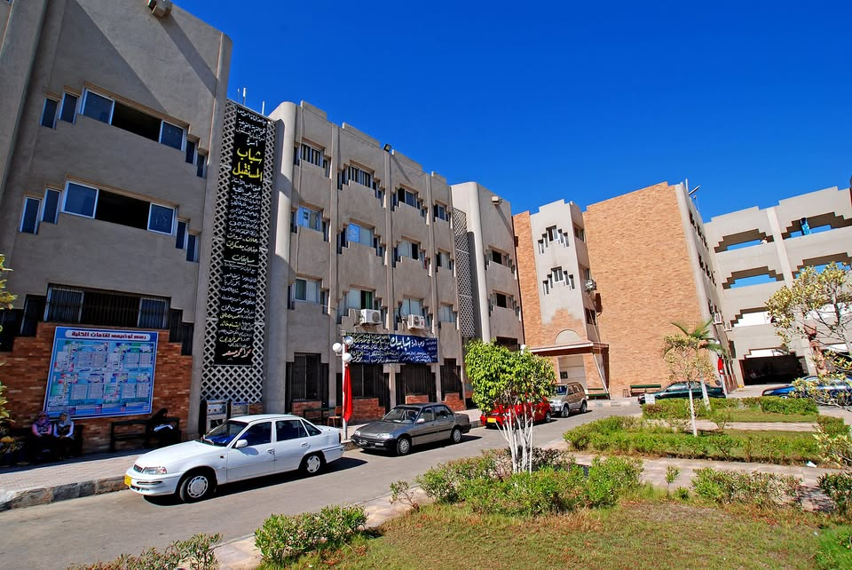

LEARN MATE

جامعة بورسعيد
نبذة عن الكلية
كلية التربية النوعية جامعة بورسعيد هي كيان تعليمي يهدف إلى إعداد معلمين متخصصين في مجالات نوعية تجمع بين المعرفة الأكاديمية والمهارات التطبيقية، لتخريج كوادر قادرة على الإبداع والتميز في سوق العمل.
تضم الكلية ٦ أقسام متنوعة: تكنولوجيا التعليم، معلم الحاسب الآلي، التربية الموسيقية، التربية الفنية، الاقتصاد المنزلي، والإعلام التربوي — كل قسم يمنحك مسارًا فريدًا يناسب شغفك وموهبتك.
نظام الساعات المعتمدة
إيه هو نظام الساعات المعتمدة؟
نظام تعليمي مبتكر بيديك مرونة في اختيار المقررات الدراسية وتنظيم جدولك حسب قدراتك واهتماماتك. كل مادة ليها عدد معين من الساعات، وبتسجل في بداية كل فصل دراسي حسب الحد المسموح.
طريقة التقييم
التقييم بيعتمد على الحضور والمشاركة، الاختبارات الدورية، المشاريع العملية، والتكليفات — عشان نقيس فهمك مش مجرد حفظ.
مميزات النظام
- حرية اختيار المقررات حسب ميولك
- تنظيم وقتك بشكل أفضل
- يراعي الفروق الفردية بين الطلاب
- يركز على الفهم والتطبيق مش الحفظ
الأقسام بالكلية
💡 قسم تكنولوجيا التعليم و معلم حاسب آلي الفرقه الاولي
💻 شعبة معلم حاسب آلي ⬇️
مواد الترم الأول📚
📘 التعلم الإلكتروني والتعليم عن بعد ⬇️
1. تعريف التعليم الإلكتروني والتعلم عن بعد
• التعلم الإلكتروني (E-Learning): هو منظومة تعليمية لتقديم البرامج التعليمية أو
التدريبية للمتعلمين في أي وقت وأي مكان باستخدام تقنيات المعلومات والاتصالات
التفاعلية.
• التعليم عن بعد (Distance Learning): نظام لا يشترط وجود المعلم والمتعلم في نفس
المكان ويعتمد على الوسائط التكنولوجية لنقل المعرفة.
2. أهمية المادة وأهدافها
• تحقيق تكافؤ الفرص التعليمية.
• المرونة في التعلم.
• ترسيخ القيم والأخلاقيات الرقمية.
• التعلم مدى الحياة.
3. مميزات التعلم الإلكتروني
• التفاعلية.
• تعدد الوسائط.
• سهولة الوصول للمعلومات.
• خفض التكاليف.
4. أخلاقيات التعلم الرقمي
• الأمانة العلمية.
• احترام الآخرين.
• حماية الخصوصية.
• الالتزام بالمواعيد.
5. التنمر الإلكتروني
• تعريفه: إيذاء الآخرين عبر الإنترنت.
• أشكاله: شائعات - انتحال - رسائل مسيئة.
• نتائجه: أضرار نفسية ودراسية.
6. الجرائم الإلكترونية
• البصمة الرقمية.
• قوانين مكافحة الجرائم الإلكترونية في مصر.
• عقوبات الحبس والغرامة.
7. التحديات
• العزلة.
• ضعف الإنترنت.
• صعوبة التقييم.
• التشتت.
8. النتائج
• الطالب محور العملية التعليمية.
• مواطن رقمي مسؤول.
• استمرارية التعليم.
🎥 فيديو شرح المادة
فيديو يشرح أساسيات التعلم الإلكتروني وأخلاقياته.

انفوجرافيك توضيحي للجانب العملي

انفوجرافيك توضيحي للجانب النظري
☁️ الحوسبة السحابية ⬇️
أولاً: نشأة وتطور الحوسبة السحابية
مرت بمراحل تاريخية: الستينات (فكرة منفعة عامة)، التسعينات (شبكات VPN)، 1999 (Salesforce - SaaS)، 2002-2006 (AWS, Google, Microsoft).
ثانياً: المفهوم والتعريفات
• لغوياً: رمز للإنترنت يخفي التفاصيل التقنية.
• اصطلاحياً: نقل المعالجة والتخزين إلى خوادم عبر الإنترنت.
ثالثاً: الأطراف المكونة
المستخدم، مزود الخدمة (Google, Microsoft, Amazon)، والإنترنت كوسيط.
رابعاً: الأهمية والأهداف
اقتصادي (تقليل التكلفة)، تقني (استمرارية العمل)، تعليمي (الوصول من أي مكان).
خامساً: الخصائص الجوهرية
الخدمة الذاتية عند الطلب، الوصول الواسع للشبكة، تجميع الموارد، المرونة الفائقة، الخدمة المقاسة.
سادساً: نماذج الخدمة
IaaS (البنية التحتية)، PaaS (المنصات)، SaaS (البرمجيات).
سابعاً: نماذج النشر
العامة، الخاصة، الهجينة، سحابة المجتمع.
ثامناً: السلبيات والتحديات
المخاطر الأمنية، الاعتماد على الإنترنت، Cloud Lock-in، التكاليف المخفية.
تاسعاً: الحوسبة السحابية والذكاء الاصطناعي
توفر قوة معالجة ضخمة، تحتاج مهارات متقدمة للدمج.
عاشراً: النتائج والتوصيات
منهج اقتصادي حديث، أهمية أمن السحابة، تدريب الكوادر البشرية.
مراحل تخزين البيانات: الاستقبال، التوزيع، التشفير، الاسترجاع.
متطلبات التحول: إنترنت قوي، نظام متوافق، وعي رقمي.
السحابة في التعليم: فصول افتراضية، معامل افتراضية، تقويم إلكتروني.
أمن المعلومات: 2FA، النسخ الاحتياطي، SLA.
الاستفادة من المادة: تقليل التكاليف، تطوير التعليم، مواكبة سوق العمل، رفع الوعي الأمني، فهم الذكاء الاصطناعي، الاستدامة.
الخلاصة: تحويل المستخدم من مجرد مستخدم تقليدي إلى مدير موارد رقمية قادر على استغلال التكنولوجيا بكفاءة.
🎥 فيديو شرح المادة
شرح كامل لمادة الحوسبة السحابية وتطبيقاتها في التعليم.

انفوجرافيك توضيحي للجانب النظري

انفوجرافيك توضيحي للجانب العملي
تكنولوجيا التعليم ⬇️
🎯 أولاً: أهداف المادة والاستفادة المرجوة
بناء قاعدة معرفية، إتقان أدوات العصر، تطوير مهارات التخطيط، حل المشكلات باستخدام التكنولوجيا كمنظومة متكاملة.
📚 ثانياً: تلخيص فصول الكتاب
الفصل الأول: التكنولوجيا علم وليست مجرد أجهزة؛ تكنولوجيا المعلومات (نظم جمع ومعالجة وتوزيع المعلومات)؛ البيانات والمعلومات. الفصل الثاني: الوسائل التعليمية عنصر أساسي. الفصل الثالث: الوسائط المتعددة (نص، صورة، صوت). الفصل الرابع: التعلم الإلكتروني والبيئات الافتراضية. الفصل الخامس: التعلم النقال، WebQuest، الكتاب الإلكتروني.
🧠 ثالثاً: التحليل الدقيق
تعتمد المادة على المدخل المنظومي: مدخلات (أفراد، أهداف، أجهزة) → عمليات → مخرجات.
💡 رابعاً: نموذج تطبيقي (WebQuest)
المقدمة، المهمة، العمليات، المصادر، التقييم.
🎯 الأهداف التفصيلية
فهم أن التكنولوجيا علم، إتقان المدخل المنظومي، تحويل البيانات إلى معلومات، تطبيق معايير جودة المعلومات.
📖 التحليل المعمق
الفصل الأول: أصل كلمة تكنولوجيا، تكنولوجيا المعلومات (دمج الحاسبات والاتصالات)، البنية (أجهزة، برمجيات، شبكات، بشر). الفصل الثاني والثالث: الوسائط الفائقة والتفاعل. الفصل الرابع والخامس: الواقع الافتراضي والتعلم النقال.
🧠 تحليل المادة
تحول الطالب من مستخدم للتكنولوجيا إلى مصمم بيئات تعليمية.
🚀 نموذج تطبيقي (تكنولوجيا الفضاء)
مرحلة التخطيط (معلومات، أجهزة، أدوات) → مرحلة التنفيذ (WebQuest، واقع افتراضي) → مرحلة التقييم (عرض، كتاب إلكتروني) → التحقق (قياس فهم الطلاب).
🎥 فيديو شرح المادة

انفوجرافيك توضيحي للجانب النظري
🐍 برمجة بايثون ⬇️
أولاً: الأهداف العامة والمخرجات التعليمية
• إرساء أسس البرمجة الحديثة باستخدام بايثون.
• التميز التقني: فهم اللغات المفسرة والمترجمة وإدارة الموارد.
• التأهيل لسوق العمل: التركيز على أمن المعلومات، الذكاء الاصطناعي، علوم
البيانات.
• بناء العقلية الخوارزمية: تطوير التفكير المتسلسل وهيكلة البيانات.
ثانياً: التحليل المعمق لمحتوى الفصول
1. الفصل الأول: مدخل إلى بايثون وريادتها التقنية
• فلسفة اللغة: جيد فان روسوم، قوة وبساطة.
• الآلية التنفيذية: لغة مفسرة (Interpreted) لتقليل زمن التطوير.
• المميزات الاستراتيجية: المقروئية العالية (Indentation)، التعددية، الوضع التفاعلي.
2. الفصل الثاني: هندسة الكود وأسس البيانات
• المعرفات (Identifiers): تبدأ بحرف أو _، لا تستخدم الكلمات المحجوزة.
• حساسية الأحرف: Note تختلف عن note.
• أنواع البيانات: لا حاجة لتحديد نوع المتغير مسبقاً (مرونة).
3. الفصل الثالث: الدوال والتفاعل مع المستخدم
• إدخال البيانات: استقبال البيانات من المستخدم.
• الدوال (Functions): استخدام `def` لتقسيم البرنامج لوحدات قابلة لإعادة الاستخدام.
4. الفصل الرابع: هياكل البيانات واتخاذ القرار
• الشروط (if): التحكم في سير البرنامج.
• القوائم (Lists): قابلة للتعديل (append, len).
• الصفوف (Tuples): غير قابلة للتعديل لحماية البيانات.
5. الفصل الخامس: الحلقات التكرارية
• While Loop: تكرار طالما الشرط صحيح.
• For Loop: تكرار بعدد محدد أو عناصر.
6. الفصل السادس: القواميس
تخزين البيانات بنظام Key: Value (قاعدة بيانات مصغرة).
ثالثاً: التحليل العلمي للمادة
تسلسل منطقي من الأساسيات حتى التحكم الكامل، يحول المتعلم إلى مهندس حلول برمجية.
رابعاً: النموذج التطبيقي (إدارة المستخدمين)
الهدف: إضافة أسماء المستخدمين وعرضهم.
# 1. تعريف القائمة
users = []
# 2. دالة الإضافة
def add_user():
while True:
name = input("أدخل اسم المستخدم (أو 'خروج'): ")
if name == 'خروج':
break
users.append(name)
print(f"تمت إضافة {name}")
add_user()
print(f"لديك الآن {len(users)} مستخدمين.")
بطاقة الملخص العملي: برمجة تطبيقات الإنترنت
القسم: تكنولوجيا التعليم
التخصص: معلم حاسب آلي
أولاً: محاور التنفيذ العملي
استخدام Python و IDLE، الالتزام بـ Indentation، استخدام input و print، استخدام if و loops.
ثانياً: إدارة البيانات
Lists باستخدام append و len، Functions باستخدام def.
ثالثاً: الأهداف
حل المشكلات وتحويلها لخوارزميات، بناء تطبيقات بسيطة، Debugging وتصحيح الأخطاء.
الهوية البصرية
أزرق داكن للنصوص - برتقالي للعناوين - خلفية بيضاء.
فيديو شرح بسيط لمادة برمجة البايثون

انفوجرافيك توضيحي للجانب النظري

انفوجرافيك توضيحي للجانب العملي
💻 نظم تشغيل متقدم ⬇️
📚 أولاً: فهرس الكتاب
الفصل الأول: نظم المعلومات ونظم التشغيل
- ماهية نظم المعلومات ومكوناتها.
- تعريف نظام التشغيل (OS) وآلية عمله.
- مهام نظام التشغيل (إدارة المعالج، الذاكرة، الملفات).
- تصنيفات وأنواع الأنظمة (DOS, Linux, Windows, Haiku).
- رحلة تطور نظم التشغيل عبر الأجيال الأربعة.
- أهمية وجود نظام التشغيل.
الفصل الثاني: Windows 10 احتراف
- إصدارات Windows 10 ومتطلبات التشغيل.
- شرح عملية التنصيب (Clean Install).
- إدارة الملفات والمجلدات وOneDrive.
- إدارة المهام (Task Manager).
- إعدادات الخصوصية والحماية (Defender & Firewall).
- أدوات الصيانة المتقدمة (فحص القرص والذاكرة والنسخ الاحتياطي).
🧠 ثانياً: الشرح المفصل لمحتوى المادة
🔹 تعريفات أساسية
نظم المعلومات: نظام يستقبل البيانات الخام ويحولها لمعلومات مفيدة (أجهزة +
برامج + بيانات + أفراد).
نظام التشغيل: المدير الأساسي للجهاز، المسؤول عن تشغيل البرامج وإدارة
الموارد.
الذاكرة الافتراضية: مساحة من القرص الصلب لتوسيع RAM.
المصدر المفتوح: أنظمة تسمح بتعديل الكود (مثل Linux).
🎯 الأهداف الرئيسية
فهم أن الجهاز بدون نظام تشغيل لا قيمة له، إدارة موارد الحاسوب بكفاءة، تحسين الأداء وسرعة الجهاز.
🛠 المهارات المكتسبة
الصيانة وحل مشاكل الجهاز، إدارة الملفات والسحابة OneDrive، الحماية والخصوصية وجدار الحماية، استخدام اختصارات لوحة المفاتيح.
💡 أهم الأفكار
تطور أنظمة التشغيل، إدارة الذاكرة ومنع تعارض البرامج، فلسفة Windows 10 (التحديث المستمر)، الحماية تعتمد على وعي المستخدم.
🚀 الاستفادة العملية
حفظ الملفات باستخدام النسخ الاحتياطي، حل مشاكل البطء بدون صيانة، تنصيب ويندوز وإدارة الجهاز بشكل احترافي.
🧪 ثالثاً: التطبيق العملي
⚡ تسريع الجهاز باستخدام Task Manager
1- اضغط Ctrl + Shift + Esc
2- افتح More Details
3- راقب Performance لمعرفة استهلاك الجهاز
4- افتح Startup
5- Disable البرامج غير المهمة
6- أعد تشغيل الجهاز
📊 النتيجة
سرعة أعلى للجهاز، تقليل استهلاك الموارد، تحسين الأداء العام.
🎥 فيديو شرح المادة

انفوجرافيك توضيحي للجانب النظري

انفوجرافيك توضيحي للجانب العملي
💻 تطبيقات الحاسب الآلي في التعليم ⬇️
أولاً: أهداف المادة والاستفادة منها
الأهداف:
• التعرف الدقيق على التقنيات الحديثة مثل الذكاء الاصطناعي، وتعلم الآلة، والتعلم
العميق.
• فهم كيفية توظيف الروبوتات والبيانات الضخمة في تحسين العملية التعليمية.
• إدراك آليات عمل "التعلم التكيفي" لتلبية الاحتياجات الفردية للطلاب.
الاستفادة المرجوة:
• توفير وقت وجهد المعلم من خلال أتمتة المهام الإدارية والتقييمية.
• تحقيق "التعلم المخصص" الذي يتناسب مع قدرات ومهارات كل طالب على حدة.
• زيادة تفاعل الطلاب داخل الفصل الدراسي باستخدام أدوات التقييم والتحليل الذكية.
• اتخاذ قرارات تعليمية مبنية على رؤى تحليلية دقيقة للبيانات (Data-driven insights).
ثانياً: ملخص تحليلي لمحتويات المقرر
1. الذكاء الاصطناعي (AI)
• هو علم يهدف إلى تصميم آلات وبرامج قادرة على تقليد القدرات العقلية والسلوكية
للبشر.
• يقدم أدوات فعالة للمعلمين مثل: أداة ClassPoint AI لتوليد الأسئلة التفاعلية، وأداة
QuillBot لإعادة صياغة المحتوى، وأداة SlidesAI لتصميم العروض التقديمية، وأداة
Gradescope للتقييم الآلي.
• يواجه تحديات مثل تحيز البيانات، واحتمالية البطالة، وصعوبة تفسير قرارات الأنظمة
الذكية.
2. تعلم الآلة (Machine Learning)
• هو فرع من الذكاء الاصطناعي يمنح أجهزة الحاسوب القدرة على التعلم والتكيف من تلقاء
نفسها دون برمجة صريحة.
• تعد البيانات بمثابة "الوقود" لهذا التعلم، سواء كانت بيانات مسماة أو غير مسماة.
• ينقسم إلى أربعة أنواع: التعلم الخاضع للإشراف، التعلم غير الخاضع للإشراف، التعلم
شبه الخاضع للإشراف، والتعلم المعزز.
3. التعلم العميق (Deep Learning)
• هو فئة فرعية من تعلم الآلة يعتمد على "الشبكات العصبية الاصطناعية" المتعددة الطبقات
لمحاكاة طريقة عمل العقل البشري.
• يمتاز بقدرته الفائقة على معالجة البيانات غير المنظمة كالنصوص، والصور، ومقاطع
الفيديو، والأصوات.
• تتعدد تطبيقاته لتشمل الرعاية الصحية، التسويق الإلكتروني، البحث الصوتي، والسيارات
ذاتية القيادة.
4. البيانات الضخمة (Big Data)
• هي كميات هائلة من المعلومات المتنوعة التي تنمو بمعدلات سريعة وتتطلب برمجيات خاصة
لمعالجتها مثل Apache Hadoop و Spark.
• تساعد في التعليم على تعزيز فعالية التعلم من خلال تحليل سلوكيات ونتائج الطلاب.
• تمكن المؤسسات من توجيه الطلاب مهنياً بشكل أدق، وتحسين عمليات توظيف وقبول الطلاب
على مستوى عالمي.
5. التعلم التكيفي (Adaptive Learning)
• هو نظام يهدف إلى تكييف طريقة عرض المواد التعليمية وتغيير مسار التعلم وفقاً
لاحتياجات وقدرات كل متعلم.
• يتميز بالتحليل الذكي لإجراءات المتعلم، وتقديم خبرات متعددة، ومراعاة الفروق الفردية
في سرعة التعلم.
• يتكون من ثلاثة نماذج أساسية: نموذج النطاق (محتوى الدورة)، نموذج المتعلم (خصائص
وبيانات الطالب)، ونموذج التكيف (آلية الربط بين المحتوى واحتياجات الطالب).
6. الروبوت (Robot)
• هو جهاز قابل للبرمجة يمكنه استشعار البيئة المحيطة والقيام بردود فعل محددة، أو
اتخاذ قرارات مستقلة اعتماداً على الذكاء الاصطناعي.
• يتكون من هيكل فيزيائي، منظومة تحكم (بمثابة الدماغ)، حساسات (لاستكشاف البيئة)،
ومشغلات حركية.
• ينقسم إلى روبوتات مسبقة البرمجة، روبوتات شبيهة بالبشر، وروبوتات ذاتية التصرف.
ثالثاً: النموذج التطبيقي العملي (خطوات توظيف تقنيات المقرر في تخطيط الدروس)
الخطوة 1: التخطيط وتوليد المحتوى (باستخدام الذكاء الاصطناعي)
يبدأ المعلم باستخدام أداة Education CoPilot لتوليد خطة الدرس والمواد التعليمية بشكل
آلي وسريع. إذا احتاج المعلم لتنويع صياغة النصوص أو تبسيطها لتناسب مستويات لغوية
مختلفة، يستخدم أداة QuillBot لإعادة صياغة المحتوى.
الخطوة 2: تصميم العرض والتفاعل (باستخدام الذكاء الاصطناعي
التوليدي)
يقوم المعلم بإدخال نصوص الدرس إلى أداة SlidesAI.io لتحويلها فوراً إلى شرائح عرض
تقديمية جذابة. لضمان تفاعل الطلاب، يتم دمج أداة ClassPoint AI داخل برنامج PowerPoint
لتوليد أسئلة تفاعلية (اختيار من متعدد أو إجابات قصيرة) بناءً على محتوى الشرائح.
الخطوة 3: التنفيذ والمراقبة (تطبيق مفهوم البيانات الضخمة وتعلم
الآلة)
أثناء الشرح، يتدرب المعلم باستخدام أداة PowerPoint Speaker Coach التي تحلل سرعة صوته
ونبرته باستخدام الذكاء الاصطناعي وتقدم له تغذية راجعة لتحسين أسلوب العرض. يقوم
المعلم بجمع استجابات الطلاب من الأسئلة التفاعلية (والتي تمثل بيانات ضخمة مصغرة)
لتحليل مدى استيعاب الفصل للدرس لحظياً.
الخطوة 4: التقييم والتكيف (تطبيق التعلم التكيفي)
يتم استخدام أداة Formative AI أو Gradescope لتقييم واجبات الطلاب واختباراتهم
تلقائياً. تقوم هذه الأدوات بتقديم تقارير تحليلية مفصلة تحدد نقاط القوة والضعف لكل
طالب. بناءً على مبادئ التعلم التكيفي، يوجه المعلم الأنشطة الإضافية أو الشروحات
البديلة للطلاب المتعثرين، ليتوافق التعلم مع سرعتهم وقدراتهم الفردية.
🎥 فيديو شرح المادة
فيديو يشرح تطبيقات الحاسب الآلي الحديثة في العملية التعليمية وكيفية توظيفها.

انفوجرافيك توضيحي للجانب النظري

انفوجرافيك توضيحي للجانب العملي
📚 مواد الترم الثاني
📚 تطبيقات المكتبات الرقمية ⬇️
أولاً: فهرس محتويات الكتاب
يتكون الكتاب من فصلين أساسيين يغطيان الجوانب النظرية والتطبيقية:
الفصل الأول: الإطار المفاهيمي والتكنولوجي:
• تعريفات أولية (البيانات، المعلومات، المعرفة).
• أوعية ومصادر المعلومات (الوثائقية وغير الوثائقية).
• المكتبات: أهميتها، أنواعها الثمانية، والخدمات التي تقدمها.
• المكتبات الإلكترونية والرقمية: المفاهيم، الفرق بينها وبين التقليدية، المتطلبات،
المزايا والعيوب، ومكونات النظام.
الفصل الثاني: بنك المعرفة المصري (EKB): يتناول بواباته وكيفية الاستفادة منه كنموذج تطبيقي.
ثانياً: الشرح المفصل للمحتوى
1- تعريفات المفاهيم الأساسية
البيانات (Data): حقائق خام أولية (أرقام، حروف، رموز) لا تعطي معنى
بمفردها إلا بعد المعالجة.
المعلومات (Information): بيانات تمت معالجتها وترتيبها لتصبح مفيدة
في اتخاذ القرارات.
المعرفة (Knowledge): هي الحصيلة النهائية لتجميع المعلومات وتنظيمها،
وهي قابلة للنمو والنضج.
المكتبة الرقمية (Digital Library): مجموعة منظمة من المعلومات
الرقمية، مخزنة ومتاحة عبر الشبكات، وتدعم إنتاج المحتوى والبحث فيه.
2- الأهداف الرئيسية للمادة
• إدراك التطور التاريخي: فهم كيفية انتقال المعلومات من الأوعية الورقية إلى الأوعية
الرقمية والافتراضية.
• التمكين التقني: تعلم كيفية التعامل مع مكونات نظام المكتبة الرقمية (واجهة المستخدم،
المستودع، ونظام البحث).
• الاستخدام الأمثل للموارد: التدريب على استخدام بنك المعرفة المصري كأداة بحثية
قومية.
3- المهارات التي ستكتسبينها
البحث العلمي الرقمي: القدرة على استخدام الفهارس والببليوجرافيات
الرقمية للوصول لمراجع دقيقة.
إدارة المصادر: التمييز بين المصادر الأولية (الأبحاث الأصلية)
والثانوية (الموسوعات والقواميس) وكيفية استرجاعها.
الوعي المعلوماتي: فهم حقوق الملكية الفكرية في البيئة الرقمية وتجنب
عيوب المكتبات الرقمية كإجهاد العين أو انتهاك الحقوق.
4- أهم النقاط والأفكار الأساسية
أنواع المكتبات: تتنوع لتشمل العامة، المتخصصة، المدرسية، القومية،
المتنقلة، والخاصة، وصولاً للمكتبة الرقمية التي لا ترتبط بمكان.
خدمات المكتبات: تشمل الخدمات المرجعية، الإعارة (داخلية وخارجية)،
التصوير، والبث الانتقائي للمعلومات.
المكتبة الرقمية vs التقليدية: الرقمية تتيح الوصول في أي وقت، توفر
نسخاً متعددة لنفس الكتاب، وتتميز بالدقة والسرعة في البحث، بينما التقليدية مقيدة
بمواعيد العمل والنسخ الورقية القابلة للتلف.
متطلبات التحول الرقمي: تتطلب قوى بشرية مدربة، أجهزة حاسب متطورة،
وبرمجيات متخصصة.
5- الفائدة العملية (الدراسة والحياة)
تجاوز الحواجز: إلغاء حواجز الزمان والمكان، مما يسهل على الطالب
الحصول على المعلومات دون عناء السفر أو التقيد بمواعيد.
توفير التكلفة: أغلب الموارد الرقمية مجانية أو بسعر بسيط مقارنة
بالكتب الورقية المكلفة.
دعم الأبحاث: توفر المكتبات الرقمية أدوات توثيق موثوقة تساعد الطالب
في إعداد أبحاثه العلمية بجودة عالية.
ثالثاً: الجزء العملي (تطبيق وخطوات)
6- تطبيق عملي: "البحث في مستودع مكتبة رقمية"
النشاط: البحث عن وثيقة تاريخية رقمية أو بحث أكاديمي في تخصص "تكنولوجيا التعليم".
7- شرح التطبيق خطوة بخطوة
استخدام الواجهة (Interface): الدخول إلى موقع المكتبة الرقمية عبر
المتصفح.
إدخال الاستفسار: كتابة الكلمات المفتاحية في نموذج البحث المخصص.
المعالجة: يقوم النظام بمطابقة كلماتك مع الكشافات والفهارس الموجودة
في "المستودع" (Repository).
الاسترجاع: يظهر لك النظام قائمة بالمواد التي تضاهي بحثك.
العرض والحفظ: اختاري "عرض" لفتح المادة على الشاشة أو "تحميل" بصيغة
PDF.
8- نتيجة التطبيق والتعلم المستفاد
النتيجة: الوصول الفوري للمعلومات المنظمة والمنهجية بدلاً من
البيانات العشوائية.
التعلم: نتعلم أن نظام المكتبة الرقمية يعمل كمنظومة متكاملة؛ فدقة
البحث تعتمد على جودة "الفهرسة"، وسرعة الوصول تعتمد على "البنية التحتية" وقوة "محرك
البحث". كما نتعلم أهمية "التنظيم المنهجي" للمعلومات لكي تتحول من مجرد بيانات إلى
مكتبة رقمية حقيقية.
🎥 فيديو شرح المادة

انفوجرافيك توضيحي للجانب النظري

انفوجرافيك توضيحي للجانب العملي
💻 مقدمة في علوم الحاسب ⬇️
فهرس الكتاب
الفصل الأول: مقدمة في علوم الحاسب (تعريفات، خصائص، وتطور).
الفصل الثاني: المكونات المادية للحاسب (Hardware).
الفصل الثالث: تمثيل البيانات داخل الحاسب.
الفصل الرابع: البرمجيات ونظم التشغيل (الأنواع والوظائف).
الفصل الخامس: مفاهيم أساسية في نظم التشغيل.
الفصل السادس: إدارة العمليات بالحاسب (Process Management).
الفصل السابع: إدارة الذاكرة (Memory Management).
الفصل الثامن: إدارة الملفات والنظم (File System).
الفصل التاسع: إدارة أجهزة الإدخال والإخراج (I/O Management).
الفصل العاشر: مقدمة في الشبكات والحوسبة السحابية.
1- تعريفات المفاهيم الأساسية
الحاسوب (Computer): آلة إلكترونية سريعة جداً ودقيقة، تقوم بمعالجة
البيانات وتخزينها واسترجاعها بناءً على تعليمات محددة للوصول لنتائج مفيدة.
المكونات المادية (Hardware): هي الأجزاء الملموسة من الجهاز مثل
المعالج، الشاشة، ولوحة المفاتيح.
البرمجيات (Software): هي الأوامر والتعليمات غير الملموسة التي تخبر
المكونات المادية بما يجب فعله.
نظام التشغيل (Operating System): هو البرنامج الأساسي الذي يعمل
كوسيط بين المستخدم وجهاز الحاسوب، ويدير جميع موارده.
البيانات (Data): حقائق أولية (أرقام أو رموز) قبل معالجتها، بينما
المعلومات (Information) هي النتائج المفيدة بعد المعالجة.
2- الأهداف الرئيسية للكتاب
• فهم كيفية عمل الحاسوب من الداخل وتطوره عبر الأجيال.
• التعرف على الفرق بين المكونات المادية والبرمجية وكيفية تكاملهما.
• استيعاب دور نظام التشغيل في إدارة الذاكرة، العمليات، والملفات.
• توضيح كيفية تحويل البيانات الخام إلى معلومات ذات قيمة.
3- المهارات المكتسبة
القدرة التقنية: التمييز بين أنواع الحواسيب (العملاقة، الشخصية،
والمدمجة) واختيار الأنسب لكل مهمة.
إدارة الملفات: مهارة تنظيم البيانات وتخزينها واسترجاعها بكفاءة
باستخدام أنظمة الملفات.
التعامل مع أنظمة التشغيل: فهم كيفية التعامل مع الواجهات الرسومية
والنصية (مثل Windows و Linux).
4- أهم الأفكار الأساسية
تطور الأجيال: بدأ الحاسوب بصمامات مفرغة ضخمة (الجيل الأول) وصولاً
إلى المعالجات الميكروية فائقة السرعة (الجيل الرابع).
دورة المعالجة: (إدخال بيانات ← معالجة ← إخراج معلومات ← تخزين).
تعدد المهام: قدرة نظم التشغيل الحديثة على تشغيل أكثر من برنامج في
وقت واحد بفعالية.
أهمية الذاكرة الافتراضية: استخدام جزء من القرص الصلب كذاكرة إضافية
لتشغيل برامج كبيرة.
5- الفائدة العملية
في الدراسة: يساعد الطالب على فهم كيفية صيانة جهازه، والتعامل مع
المشكلات البرمجية البسيطة.
في الحياة: التميز في سوق العمل الذي يتطلب فهماً عميقاً للحوسبة
السحابية، والشبكات، وكيفية حماية البيانات.
الجزء العملي (تطبيق مقترح)
6- تطبيق عملي: إدارة الملفات والتعرف على نظام التشغيل
هذا النشاط يهدف إلى فهم كيفية قيام نظام التشغيل بتنظيم البيانات ماديًا وبرمجيًا.
7- شرح التطبيق خطوة بخطوة:
استكشاف النظام: افتح "لوحة التحكم" (Control Panel) في نظام Windows
لرؤية المكونات المادية (Hardware) المعرفة على جهازك.
إدارة المهام: اضغط على (Ctrl + Shift + Esc) لفتح "مدير المهام"
(Task Manager) لمراقبة "وحدة المعالجة المركزية" و"الذاكرة" أثناء عمل البرامج (إدارة
العمليات).
تنظيم الملفات: قم بإنشاء مجلد رئيسي باسم "المواد الدراسية"، وداخله
مجلدات فرعية لكل مادة، ثم انقل ملفاتك إليها (فهم نظام إدارة الملفات).
8- نتيجة التطبيق وما نتعلمه منه:
النتيجة: الوصول السريع للمعلومات، وفهم استهلاك البرامج لموارد
الجهاز.
ما نتعلمه: ندرك عملياً أن نظام التشغيل ليس مجرد واجهة، بل هو مدير
ذكي يقوم بتوزيع المهام على المعالج والذاكرة ويحافظ على ترتيب ملفاتنا لضمان عدم
ضياعها.
🎥 فيديو شرح المادة

انفوجرافيك توضيحي للجانب النظري

انفوجرافيك توضيحي للجانب العملي
🌐 مقدمة في الشبكات ⬇️
فهرس المحتوى
1. مقدمة وتعريفات: مفهوم الشبكة وأهميتها.
2. مكونات الشبكة: المكونات المادية والبرمجية.
3. أنواع الشبكات: التصنيف الجغرافي، الهندسي، وأساليب المعالجة.
4. الإنترنت والتقنيات الحديثة: نماذج OSI وTCP/IP، الحوسبة السحابية، والويب.
5. عناوين IP وأوامر الشبكة: أنواع العناوين وأدوات فحص الاتصال.
1- تعريفات المفاهيم الأساسية
• شبكة الحاسب (Computer Network): نظام يربط جهازين أو أكثر لمشاركة
الموارد (طابعات، ملفات) والبيانات.
• الخادم (Server): جهاز ذو قدرات عالية يقدم خدمات محددة لبقية
الأجهزة، مثل خادم الويب أو خادم الملفات.
• البروتوكولات (Protocols): قوانين وإجراءات تنظم عملية تبادل
البيانات وتؤمن الاتصال بين الأجهزة.
• عناوين الـ IP: المعرف الرقمي الفريد لكل جهاز على الشبكة ليتمكن من
التواصل مع الآخرين.
2- الأهداف الرئيسية للكتاب
• فهم كيفية بناء شبكة حاسوب متكاملة.
• التعرف على الفروقات بين أنواع الشبكات (LAN، WAN، MAN).
• إدراك كيفية عمل الإنترنت من خلال النماذج المرجعية (OSI & TCP/IP).
• التمكن من استخدام الأدوات البرمجية الأساسية لإدارة وفحص الشبكات.
3- المهارات المكتسبة
• تحديد المكونات المادية المناسبة لإنشاء شبكة (كابلات، أجهزة ربط كـ Switch
وRouter).
• القدرة على تمييز أنواع التصاميم الهندسية للشبكات (Topologies).
• التعامل مع إعدادات الـ IP وفهم تقسيماتها.
• استكشاف الأخطاء وإصلاحها في الاتصال باستخدام أوامر الأنظمة.
4- أهم النقاط والأفكار الأساسية
• المشاركة: الهدف الأسمى للشبكة هو توفير الجهد والمال عبر مشاركة
البرمجيات والمعدات.
• المركزية واللامركزية: الفرق بين شبكات "العميل والخادم" حيث
الإدارة مركزية، وشبكات "الند للند" (Peer-to-Peer) التي تتساوى فيها الأجهزة.
• الحوسبة السحابية: تقنية تتيح الوصول للموارد والبيانات عبر
الإنترنت دون الحاجة لتخزينها محلياً.
• الأمن: ضرورة حماية الشبكات عبر جدران الحماية (Firewall)
والبرمجيات المتخصصة.
5- الفائدة العملية (في الدراسة والحياة)
• دراسياً: فهم الأساس التقني الذي يقوم عليه التحول الرقمي والتعليم
الإلكتروني.
• عملياً: تمكين الأفراد والشركات من إدارة بياناتهم بكفاءة، وتسهيل
التجارة الإلكترونية والعمل عن بعد.
الجزء العملي: تطبيق "فحص الاتصال"
6- تطبيق عملي: استخدام أمر (Ping)
هو نشاط يستخدم للتأكد من وجود اتصال فعلي بين جهازك وجهاز آخر أو موقع إلكتروني على الشبكة.
7- شرح التطبيق خطوة بخطوة:
1. افتح قائمة "ابدأ" (Start) وابحث عن برنامج Command Prompt (موجّه الأوامر).
2. اكتب الأمر التالي: ping www.google.com ثم اضغط Enter.
3. راقب النتائج التي تظهر على الشاشة.
8- نتيجة التطبيق وما نتعلمه:
• إذا ظهرت رسالة "Reply from...": يعني أن الاتصال ناجح والجهاز الآخر "حي"
ويستجيب.
• إذا ظهرت رسالة "Request timed out": يعني أن هناك مشكلة في الاتصال، إما لأن الجهاز
الآخر مغلق، أو لوجود خلل في الكابلات أو إعدادات الشبكة.
• التعلم: نتعلم كيفية تشخيص أعطال الإنترنت بأنفسنا قبل الاستعانة
بالفني المختص.
🎥 فيديو شرح المادة
شرح مفصل لمفاهيم الشبكات، أنواعها، بروتوكولاتها، وكيفية فحص الاتصال باستخدام أمر Ping.

انفوجرافيك توضيحي للجانب النظري

انفوجرافيك توضيحي للجانب العملي
💻 تطبيقات الحاسب في التعليم (٢) ⬇️
📌 شرح المادة
تدور المادة حول المستحدثات التكنولوجية وكيفية توظيفها لتحويل التعليم من التلقين إلى التعلم التفاعلي المتمركز حول الطالب.
🧠 الفصل الأول: المستحدثات التكنولوجية
• استخدام التكنولوجيا لحل مشكلات التعليم
• خصائصها: التفاعلية – الفردية – التنوع – العالمية – الرقمنة
التصنيفات:
• مواد تعليمية: وسائط متعددة – فصول افتراضية – مكتبات رقمية
• أجهزة: سبورة ذكية – أجهزة لوحية – VR – هولوجرام
• استراتيجيات: تعلم تعاوني – محاكاة – حل مشكلات
🖥️ الفصل الثاني: الأجهزة التفاعلية
• السبورة الذكية: عرض تفاعلي وحفظ الدروس
• الأجهزة اللوحية: تعلم في أي وقت ومكان
• الهولوجرام: مجسمات ثلاثية الأبعاد
• الواقع الافتراضي (VR): بيئة تعليمية محاكاة للواقع
🚀 الفصل الثالث: مستقبل التعليم
• بيئة تعلم مفتوحة وتفاعلية
• المعلم: مرشد وميسر
• الطالب: باحث نشط
• التقييم: ملفات إنجاز بدل الامتحانات
🎯 الأهداف
• التعلم المتمركز حول الطالب
• التعلم في أي وقت ومكان
• محاكاة الواقع بأمان
• مراعاة الفروق الفردية
• تنمية مهارات التفكير
🧪 تطبيق عملي
درس: المجموعة الشمسية 🌍
1- استخدام السبورة الذكية للتفاعل
2- تجربة VR لرحلة فضائية
3- بحث جماعي باستخدام الأجهزة اللوحية
4- تقييم عبر مشروع أو فيديو بدل امتحان
🎥 فيديو شرح المادة
شرح تطبيقات الحاسب في التعليم (٢)
انفوجرافيك توضيحي للجانب النظري
انفوجرافيك توضيحي للجانب العملي
👨💻 برمجة تطبيقات الإنترنت ⬇️
🎯 الأهداف العامة
• فهم البرمجة الحديثة باستخدام Python
• التفرقة بين اللغات المفسرة والمترجمة
• التأهيل لسوق العمل (AI – Data – Security)
• بناء التفكير الخوارزمي
🧠 الفصل الأول: مدخل إلى بايثون
• لغة بسيطة وقوية أنشأها Guido van Rossum
• لغة مفسرة (Interpreted)
• تعتمد على الـ Indentation بدل الأقواس
• تعمل على جميع الأنظمة
🧩 الفصل الثاني: البيانات
• المتغيرات لها قواعد تسمية محددة
• حساسية لحالة الأحرف (Case Sensitive)
• لا تحتاج تعريف نوع المتغير
⚙️ الفصل الثالث: الدوال
• استخدام input() لإدخال البيانات
• تعريف الدوال باستخدام def
• تقسيم البرنامج لوحدات صغيرة
🧠 الفصل الرابع: التحكم
• if / else لاتخاذ القرار
• Lists لتخزين البيانات القابلة للتعديل
• Tuples للبيانات الثابتة
🔁 الفصل الخامس: الحلقات
• while للتكرار بشرط
• for للتكرار بعدد محدد
📂 الفصل السادس: القواميس
• تخزين البيانات بنظام Key : Value
• الوصول السريع للمعلومات
🧪 نموذج تطبيقي
برنامج إدارة مستخدمين:
• إدخال أسماء المستخدمين
• تخزينها في List
• التوقف بكلمة "خروج"
• عرض عدد المستخدمين
users = []
def add_user():
while True:
name = input("أدخل اسم المستخدم (أو 'خروج'): ")
if name == 'خروج':
break
users.append(name)
print(f"تمت إضافة {name}")
add_user()
print(f"لديك الآن {len(users)} مستخدمين.")
💡 المهارات المكتسبة
• حل المشكلات البرمجية
• بناء تطبيقات بسيطة
• Debugging (تصحيح الأخطاء)
🎯 النتائج
• التفكير الخوارزمي
• بناء برامج عملية
• فهم أساسيات البرمجة الحديثة
🎥 فيديو شرح المادة
شرح برمجة تطبيقات الإنترنت (Python)
انفوجرافيك توضيحي للجانب النظري
انفوجرافيك توضيحي للجانب العملي
📚 مواد الترم الأول
📘 مدخل الي العلوم التربوية⬇️
1. مفهوم التربية وتطورها: • المفهوم اللغوي: مشتق من "ربا يربو" بمعنى زاد ونما. • المفهوم الاصطلاحي: عملية هادفة لتنمية الإنسان جسمياً وعقلياً وخلقياً. • التربية كعملية حياة: تنمية قدرات الأفراد لصالح المجتمع (اليونسكو). 2. أهمية التربية: • تطوير الشعوب. • تحقيق التنمية الاقتصادية والاجتماعية. • الحراك الاجتماعي. • بناء الدولة الحديثة. 3. الأهداف التربوية: • أهداف عامة وخاصة وسلوكية. • مجالاتها: معرفي - وجداني - حركي. 4. علاقة التربية بالعلوم: • علم النفس: فهم المتعلم. • الفلسفة: الإطار النظري. • الدين: القيم والأخلاق. 5. الأسس الاجتماعية: • الأسرة، المدرسة، الإعلام، ودور العبادة. 6. التعلم والتعليم: • التعلم: تغيير السلوك نتيجة الخبرة. • التعليم: تنظيم عملية التعلم. • المعلم: موجه ومرشد. 7. المناهج وطرق التدريس: • المنهج الحديث يشمل الأنشطة والخبرات. • استخدام المناقشة والعصف الذهني. 8. أخلاقيات المعلم: • العدالة. • احترام الفروق الفردية. • الالتزام المهني. 9. التغيير الاجتماعي: • المدرسة أداة تغيير وليست مرآة فقط. • إصلاح تربوي مستمر. 10. المشكلات التربوية: • ضعف الإمكانيات. • الحفظ بدل الفهم. • الحل: التخطيط العلمي. ________________________________________ 📘 المفاهيم التربوية: • التعلم: تعديل السلوك نتيجة الخبرة. • أنواع التعلم: معرفي، عقلي، وجداني، اجتماعي. ________________________________________ 📘 الفلسفات التربوية: • المثالية: التركيز على العقل والمعرفة. • الطبيعية (روسو): التعلم من الطبيعة. • البراجماتية (ديوي): التعلم بالتجربة. ________________________________________ 📘 التربية والمجتمع: • التربية تحفظ وتنقل الثقافة وتساهم في تغيير المجتمع. • الاستثمار في الإنسان هو الأساس. ________________________________________ 📘 محددات الأهداف: • المتعلم، المجتمع، العصر والتكنولوجيا. ________________________________________ 📘 الفرق بين المفاهيم: • التربية: شاملة لبناء الإنسان. • التعليم: نقل المعرفة. • التدريس: التفاعل داخل الفصل. ________________________________________ 📘 الإدارة التعليمية: • تحويل المدرسة لمجتمع تعلم. • المعلم: ميسر وموجه. • الالتزام بأخلاقيات المهنة. ________________________________________ 📘 أسباب الفشل: • الحفظ فقط، ضعف التطبيق. الحل: البحث العلمي. ________________________________________ 📘 التخطيط المستقبلي: • تحليل الواقع، تحديد الاحتياجات، تطوير النظام التعليمي. ________________________________________ الخلاصة: التربية هي بناء الإنسان وإعداده للحياة والمستقبل بشكل متكامل معرفياً وأخلاقياً واجتماعياً.
🎥 فيديو شرح المادة
فيديو شرح مادة العلوم التربوية يوضح المفاهيم بشكل مبسط وعملي.

انفوجرافيك توضيحي
📘 أخلاقيات التعلم الالكتروني والتعليم عن بعد ⬇️
📚 أولاً: فهرس الكتاب
- الفصل الأول: التعلم الإلكتروني (ص 5 - 30)
- الفصل الثاني: التعليم عن بعد (ص 31 - 48)
- الفصل الثالث: أخلاقيات التعلم الإلكتروني (ص 49 - 72)
- الفصل الرابع: آداب وأخلاقيات التعلم عن بعد (ص 73 - 94)
- الفصل الخامس: التنمر الإلكتروني (ص 95 - 101)
- أنشطة بحثية: البصمة الرقمية والجرائم الإلكترونية وعقوبتها في مصر
🧠 ثانياً: تعريفات المفاهيم الأساسية
التعليم الإلكتروني: نظام تعليمي يعتمد على الإنترنت وتقنيات المعلومات لتقديم
المحتوى في أي وقت ومكان.
الحاسب الآلي: جهاز إلكتروني يستقبل البيانات ويعالجها ويخرج نتائج دقيقة بسرعة
عالية.
الإنترنت: شبكة عالمية تربط ملايين الأجهزة لتبادل المعلومات بسرعة كبيرة.
🎯 ثالثاً: الأهداف الرئيسية للمحتوى
- خلق بيئة تعليمية تفاعلية
- إكساب المهارات التقنية الحديثة
- تعزيز التعلم الذاتي
- توسيع التواصل بين الطلاب والمعلمين
🛠 رابعاً: المهارات المكتسبة
- مهارات تقنية في استخدام الحاسب والمنصات التعليمية
- مهارات أخلاقية في التعامل الرقمي
- مهارات بحث وجمع المعلومات
- مهارات تواصل في الفصول الافتراضية
💡 خامساً: أهم الأفكار الأساسية
- تطور التعليم الإلكتروني عبر الأجيال
- مرونة التعلم في أي وقت ومكان 24/7
- الاعتماد على الوسائط المتعددة (صور + فيديو + نصوص)
- أهمية الأخلاقيات الرقمية وحماية البصمة الرقمية
🚀 سادساً: الاستفادة العملية
في الدراسة: فهم أفضل للدروس باستخدام الوسائط التفاعلية.
في الحياة: التعلم المستمر بدون قيود مكان أو زمان.
🧪 سابعاً: التطبيق العملي
📌 إنشاء جلسة تعلم تفاعلية
الهدف: مناقشة موضوع دراسي باستخدام منصات تعليمية.
الخطوات:
1- استخدام منصة مثل Zoom أو Teams أو البريد الإلكتروني
2- تحديد موضوع للنقاش
3- مشاركة فيديو أو رابط تعليمي
4- الالتزام بآداب الحوار وتجنب التنمر الإلكتروني
📊 النتيجة
الوصول لفهم مشترك بين الطلاب من خلال التفاعل وتبادل الأفكار.
🎥 فيديو المادة

انفوجرافيك توضيحي للجانب النظري

انفوجرافيك توضيحي للجانب العملي
🌍 القضايا المجتمعية ⬇️
أولاً: فلسفة المقرر وأهميته (بناء الإنسان)
تعتبر الجامعات معقلاً للفكر الإنساني ومصدراً لتنمية الثروة البشرية. يهدف هذا المقرر إلى بناء شخصية الطالب من ثلاثة جوانب أساسية:
- الجانب المعرفي: تزويد الطلاب بالحقائق العلمية ومهارات التحليل والتقويم.
- الجانب الوجداني: تهذيب المشاعر وتعزيز قيم الولاء والانتماء.
- الجانب المهاري الحركي: ممارسات عملية تبدأ من البسيطة حتى المعقدة.
ثانياً: أهداف المقرر الرئيسية
- رفع وعي الطالب بالقضايا المجتمعية
- تعزيز المشاركة المجتمعية
- ربط الدراسة بالمجتمع
- تنمية التعلم الذاتي
ثالثاً: المحتوى العلمي وهيكل الكتاب
الباب الأول (إجباري):
- الزيادة السكانية والصحة الإنجابية
- حقوق الإنسان
- مكافحة الفساد
- آداب الحوار
الباب الثاني (اختياري):
- التربية الإعلامية الرقمية
- موضوعات يحددها مجلس الجامعة
رابعاً: استراتيجية التعلم
- تعلم ذاتي عبر المنصات
- قراءة الفصول والإجابة على الأسئلة
- وجود مفتاح إجابة
خامساً: الأنشطة الميدانية
- محو الأمية
- قوافل طبية
- زيارات ميدانية
- ندوات
سادساً: التقويم
- نظري 50%
- عملي 50%
موضوعات تفصيلية
الزيادة السكانية
عدم التوازن بين السكان والموارد مما يؤدي لانخفاض جودة الحياة.
حقوق الإنسان
حقوق أساسية لكل إنسان، تقابلها واجبات.
مكافحة الفساد
الفساد هو استغلال السلطة، والشفافية هي الوضوح.
آداب الحوار
احترام الآخر والاستماع الجيد.
التربية الإعلامية
تحليل ونقد المعلومات ومواجهة الشائعات.
مخرجات التعلم
- تحليل المشكلات
- المشاركة المجتمعية
- الالتزام بالقيم
المواطنة
تعزيز الانتماء والمشاركة في المبادرات.
الأمن القومي
حماية الهوية ومواجهة التطرف.
ريادة الأعمال
تحويل الأفكار لمشروعات.
دليل النجاح
- قراءة ناقدة
- توثيق النشاط
- التفاعل الرقمي
القيم الأخلاقية
- الأمانة
- المساواة
- المسؤولية
🎥 فيديو الشرح
📌 شاهد الفيديو لفهم الدرس بشكل مبسط وسريع

انفوجرافيك توضيحي للجانب النظري
📊 المدخل إلى الإحصاء الوصفي ⬇️
أولاً: فهرس المحتوى
1. المفاهيم الأساسية في الإحصاء (البيانات، المتغيرات، المجتمع، العينة)
2. تنظيم وعرض البيانات (الجداول التكرارية)
3. العرض البياني (الأعمدة، القطاعات الدائرية)
4. البيانات الكمية (المدرج التكراري، المنحنيات)
5. مقاييس النزعة المركزية (المتوسط، الوسيط، المنوال)
6. مقاييس التشتت (المدى، التباين، الانحراف المعياري)
7. المقاييس النسبية (معامل الاختلاف، Z-score)
8. الارتباط والانحدار (بيرسون، خط الانحدار)
ثانياً: المفاهيم الأساسية
علم الإحصاء هو العلم الذي يهتم بجمع البيانات وتنظيمها وتحليلها للوصول إلى قرارات
صحيحة.
الإحصاء الوصفي يركز على عرض البيانات فقط دون تعميم النتائج.
المجتمع هو كل الأفراد محل الدراسة، بينما العينة جزء منه.
البيانات نوعان: وصفية (غير رقمية) وكمية (رقمية).
الأهداف
• فهم البيانات وتحليلها
• تحويل البيانات إلى جداول ورسوم
• وصف الظواهر باستخدام الأرقام
• التمهيد للبحث العلمي
المهارات المكتسبة
• تنظيم البيانات
• الرسم البياني
• الحساب الإحصائي
• قياس التشتت
• تحليل العلاقات بين المتغيرات
أهم الأفكار
تبدأ العملية الإحصائية بجمع البيانات وتحديد نوعها.
يتم تنظيم البيانات في جداول لتسهيل تحليلها.
الرسوم البيانية تساعد على الفهم السريع.
المتوسط يتأثر بالقيم الشاذة، بينما الوسيط لا يتأثر.
الانحراف المعياري يوضح مدى تشتت البيانات.
الارتباط يحدد العلاقة بين المتغيرات.
الفائدة العملية
في الدراسة: تحليل نتائج الطلاب وفهم الأداء.
في الحياة: اتخاذ قرارات مبنية على بيانات وفهم الإحصائيات.
التطبيق العملي
البيانات: {5, 8, 7, 5, 10, 6, 8, 5, 9, 7}
الخطوات:
ترتيب البيانات: {5,5,5,6,7,7,8,8,9,10}
المتوسط = 7
الوسيط = 7
المنوال = 5
النتيجة
رغم أن المتوسط جيد، إلا أن وجود منوال منخفض يدل على وجود طلاب يحتاجون دعم إضافي.
🎥 شرح مبسط لمفاهيم الإحصاء الوصفي وتطبيقاته العملية

انفوجرافيك توضيحي
📚 مواد الترم الثاني
📘 طرق التدريس العامة ⬇️
أولاً: تعريف المادة
• يُعرف التدريس في الأصل بأنه اكتساب المعلومات والمهارات، لكن التعريف الأشمل يرى أنه
عملية اتصال وتعاون بين المعلم والطالب لإيصال رسالة تربوية.
• التدريس هو نشاط إنساني هادف ومخطط ومنظم يسعى لتحقيق النمو الشامل للمتعلم وإكسابه
التفكير المنظم.
• تعتبر المادة التدريس "علماً وفناً" في آن واحد؛ فهو علم لاستناده إلى قواعد ونظريات،
وفن لاعتماده على المواهب والمهارات الفردية للمعلم.
ثانياً: أهداف الدراسة (لماذا ندرس هذه المادة؟)
• إعداد المعلم إعداداً جيداً من خلال تزويده بمهارات التدريس واستراتيجياته ووسائله
الحديثة.
• تمكين المعلم من مساعدة الطلاب على النمو المتكامل وتصميم الخبرات التربوية التي تثير
تفكيرهم.
• تدريب المعلم على مراعاة الفروق الفردية بين المتعلمين وتقديم أنشطة تناسب احتياجات
كل طالب.
• فهم العلاقة بين طرق التدريس وتأثيرها في الطلاب لتقويم العملية التعليمية وتطويرها.
ثالثاً: الأهداف الإستراتيجية للدراسة
• تحويل عملية التدريس إلى منظومة متكاملة تشمل مدخلات (بشرية ومادية) وعمليات
(استراتيجيات وطرائق) ومخرجات (معرفية ومهارية ووجدانية).
• الانتقال من التعليم التقليدي الذي يركز على الحفظ إلى التعليم النشط الذي يجعل
الطالب محور العملية التعليمية.
• تيسير عملية التعلم وجعلها ممتعة من خلال تنويع الأنشطة والوسائل التعليمية.
• إعداد جيل قادر على التعلم الذاتي المستمر مدى الحياة لمواكبة معطيات العصر.
رابعاً: تفصيل محتوى الكتاب (الدروس والمميزات)
• مفاهيم التعلم والتعليم: يوضح الكتاب أن التعلم هو تعديل في السلوك
ناتج عن الخبرة، بينما التعليم هو التصميم المنظم لهذه الخبرة.
• طرق التدريس التقليدية: مثل طريقة الإلقاء (المحاضرة) التي تعتمد
على المعلم كمصدر وحيد للمعلومات.
• طرق التدريس الحديثة: تشمل الحوار والمناقشة، حل المشكلات،
الاكتشاف، والتعلم باللعب.
• استراتيجيات مبتكرة: مثل الإنفوجرافيك التعليمي الذي يحول البيانات
المعقدة إلى صور سهلة الفهم، والخرائط المفاهيمية لتمثيل المعرفة.
• التعلم التكنولوجي: يتناول الكتاب التعليم الإلكتروني والتعلم
بواسطة الحاسب الآلي لمراعاة السرعة الأدائية لكل متعلم.
• أنماط التدريس الفردي والجماعي: يفرق الكتاب بين النمط الجمعي
(التقليدي) والنمط الفردي والتعاوني.
خامساً: عيوب ومخاطر (تحديات تطبيق بعض الطرق)
• عيوب الإلقاء: تجعل موقف المتعلم سلبياً، وتؤدي إلى الملل، وتغفل
ميول التلاميذ وفروقهم الفردية.
• مآخذ التعليم الفردي: قلة التفاعل بين الطلاب، وقد يبعث على الملل
إذا كانت خطواته محددة جداً، كما يحتاج وقتاً وجهداً كبيراً في الإعداد.
• تحديات حل المشكلات والمشاريع: قد تواجه صعوبة في التنفيذ بسبب قلة
الإمكانات المادية أو ضيق وقت المنهج الدراسي.
• مخاطر الجمود: المعلم الذي لا يجدد طرقه ويقتبس من محيطه يصبح خطراً
على مهنة التعليم.
سادساً: نتائج دراسة المادة والمهارات المكتسبة
• المهارات التخطيطية: القدرة على صياغة الأهداف السلوكية، تحليل
المحتوى، وتصميم بيئة الصف.
• المهارات التنفيذية: اكتساب المهارة في توصيل المعلومات، استخدام
الوسائل التعليمية، والتحكم في الانفعالات.
• المهارات التقويمية: القدرة على استخدام أنواع التقويم المختلفة
(قبلي، بنائي، نهائي) وتقديم تغذية راجعة سريعة.
• مهارات التفكير: تنمية التفكير البصري والناقد والإبداعي لدى الطلاب
من خلال استراتيجيات الاكتشاف والتخيل.
سابعاً: الاستفادة العملية للطالب (من وحي المادة)
• الاحترافية المهنية: تزويد الطالب بالـ "أدوات" اللازمة ليصبح
معلماً متمكناً يمتلك "زمام الدرس".
• المرونة والابتكار: القدرة على اختيار الطريقة الأنسب لكل موقف
تعليمي بدلاً من الالتزام بنمط واحد جامد.
• بناء الشخصية: المادة تساعد الطالب على اكتساب صفات المعلم القدوة،
مثل الحياد والموضوعية وحسن التصرف.
🎥 فيديو شرح المادة
شاهد الفيديو لفهم طرق التدريس العامة وتطبيقها العملي.

انفوجرافيك توضيحي
📘 المناهج وتنظيماتها ⬇️
📖 أولاً: فهرس المحتوى
المقدمة: تطور الفكر التربوي ونظام التعليم 2.0.
مدخل إلى علم المناهج (التقليدي والحديث).
عناصر المنهج وأسس بنائه.
تنظيمات المناهج المختلفة.
📌 المفاهيم الأساسية
• المنهج: مخطط تربوي متكامل.
• التعليم 2.0: تعليم قائم على المهارات.
• الخبرة التعليمية: تفاعل الطالب مع البيئة.
• المنهج الخفي: قيم غير مباشرة.
🎯 الأهداف
• بناء منهج حديث
• فهم عناصر المنهج
• ربط التعليم بالمجتمع
💡 المهارات
• صياغة الأهداف
• اختيار المحتوى
• التقويم الشامل
• التكيف مع الأنظمة الحديثة
🧠 أهم الأفكار
المنهج التقليدي يعتمد على الحفظ.
المنهج الحديث يركز على الطالب.
عناصر المنهج: أهداف – محتوى – طرق – وسائل – تقويم.
📊 تنظيمات المناهج
• المواد المنفصلة
• منهج النشاط
• منهج الوحدات
🚀 الفائدة العملية
تساعدك المادة على التحول إلى مصمم تعليمي محترف.
📝 تطبيق عملي
تصميم وحدة تعليمية باستخدام نظام التعليم الحديث وربطها بمشكلة حقيقية.
🎥 شرح مادة المناهج وتنظيماتها

انفوجرافيك توضيحي للجانب النظري
🧠 مدخل إلى علم النفس ⬇️
📌 ما هو علم النفس؟
علم النفس هو العلم الذي يدرس سلوك الإنسان الظاهر مثل الحركة والكلام، والباطن مثل التفكير والمشاعر.
🎯 أهداف علم النفس
• الفهم: تفسير السلوك
• التنبؤ: توقع السلوك
• الضبط: التحكم في السلوك
📜 نشأة علم النفس
بدأ كفرع من الفلسفة، وأصبح علمًا مستقلًا سنة 1879 على يد فيلهلم فونت.
🧠 المدارس النفسية
• السلوكية
• المعرفية
• التحليل النفسي
• الإنسانية
🔍 السلوك
هو استجابة لمنبه، وينقسم إلى ظاهر وباطن.
📊 مناهج البحث
• المنهج التجريبي
• الملاحظة
• دراسة الحالة
• المسح
• الاختبارات النفسية
🔥 الدوافع
قوى داخلية تحرك الإنسان، وتنقسم إلى فسيولوجية ونفسية.
🌍 العوامل المؤثرة
الأسرة – المدرسة – الثقافة – الإعلام – البيئة
💡 مفاهيم أساسية
• الحاجة: شعور بالنقص
• الدافع: محرك السلوك
• الحافز: هدف خارجي
• العادة: سلوك متكرر
🏁 الخلاصة
يساعد علم النفس في فهم الإنسان وتحسين العلاقات وحل المشكلات النفسية.
🎥 شرح مدخل إلى علم النفس

انفوجرافيك توضيحي للجانب النظري
🚀 ريادة الأعمال ⬇️
📌 معنى ريادة الأعمال
• إنشاء مشروع جديد بفكرة مبتكرة بهدف الربح
• تعتمد على: الإبداع + المخاطرة + التخطيط
💡 أنواع ريادة الأعمال
• مشاريع صغيرة
• Startup (قابلة للتوسع)
• شركات كبيرة
• ريادة اجتماعية
🎯 الأهداف
• تحسين الاقتصاد
• توفير فرص عمل
• تقديم خدمات جديدة
• تحقيق الاستقلال المادي
🧠 مهارات رائد الأعمال
• التخطيط
• التسويق والإقناع
• إدارة الوقت والمال
• التواصل
• اتخاذ القرار
• الإبداع
👩💼 الصفات
• الثقة بالنفس
• تحمل المسؤولية
• حب المخاطرة
• التفكير الإبداعي
• الصبر
🚀 تحويل الفكرة لمشروع
1- تحديد الفكرة
2- دراسة السوق
3- خطة عمل (Business Plan)
4- التمويل
5- التنفيذ
6- التطوير المستمر
📊 تحليل SWOT
• نقاط القوة
• نقاط الضعف
• الفرص
• التهديدات
🏢 حاضنات الأعمال
• تدعم المشاريع الجديدة
• توفر تدريب وتمويل
• تقدم استشارات
🎓 دور التعليم
• نشر ثقافة ريادة الأعمال
• تدريب الطلاب
• دعم الابتكار
🎨 الإبداع والابتكار
• التفكير خارج الصندوق
• تجربة أفكار جديدة
• تطوير المنتجات
📌 أنواع المشروعات
• مشروع فردي
• شركة
• مشاريع صغيرة ومتوسطة
🏁 الخلاصة
ريادة الأعمال = فكرة + تخطيط + مهارات + تنفيذ + تطوير مستمر
🎥 شرح ريادة الأعمال

انفوجرافيك توضيحي للجانب النظري
📘 طرق التنمية الذاتية والتفكير الابداعي ⬇️
1. تعريف المادة وفلسفة "قواعد الحياة": منهج لتغيير الحياة عبر الانضباط الذاتي، قواعد شخصية كنقطة رجوع.
2. الأهداف الإستراتيجية: تحقيق الاستنارة الشخصية، تطوير التفكير الانعكاسي، ردم الفجوة بين الساعة والبوصلة.
الباب الثاني: البناء النفسي وتطوير العقلية الإيجابية
1. هندسة التفكير الإيجابي وبرمجة اللاوعي: العقل الباطن (الخادم الأمين)، قانون سيادة الخيال، المسؤولية عن الطاقة الذاتية.
2. سيكولوجية التفاؤل والتشاؤم الدفاعي: التفاؤل المستند للواقع، التشاؤم الدفاعي كاستراتيجية.
الباب الثالث: إدارة الأولويات والقيادة الذاتية
1. منهجية "الأهم أولاً" (المربع الثاني): تجنب إدمان الطوارئ، عملية التنظيم الأسبوعي.
2. التوازن النفسي بين المادي والمعنوي: الهارموني الداخلي، قوة التركيز (شعاع الليزر).
الباب الرابع: الإستراتيجيات العملية للنجاح المهني
1. التخطيط الزمني الرباعي المستويات: الخطة الشهرية، السنوية، الخمسية، طويلة المدى.
2. نظام الترقية وصناعة المستقبل: خريطة الطريق، تطوير الهوية الشخصية.
الباب الخامس: المهارات المكتسبة والنتائج المرجوة
1. المهارات الذهنية والسلوكية: المرونة الفكرية، الانضباط والسيطرة، المثابرة الذكية.
2. الفوائد العملية: صناعة الفارق، الاستمتاع بالتعلم.
الباب السادس: التحديات والمخاطر (عيوب المسار العشوائي)
التسويف، الخوف من الانتقاد، الجمود الفكري.
نتائج نهائية للدراسة
سد الفجوة بين الساعة والبوصلة، حياة قائمة على المبادئ تحقق السلام النفسي والنتائج الباهرة.
الفيديو يوضح أهم مفاهيم التنمية الذاتية بشكل بسيط.

انفوجرافيك توضيحي
🖥️ شعبة تكنولوجيا التعليم ⬇️
مواد الترم الأول📚
- المقدمة: تطور الفكر التربوي ونظام التعليم 2.0
- مدخل إلى علم المناهج
- عناصر المنهج وأسس بنائه
- تنظيمات المناهج
- المنهج الحديث: مخطط تربوي يضم خبرات وأنشطة لتنمية الطالب بشكل متكامل.
- نظام 2.0: تعليم قائم على الفهم والمهارات بدل الحفظ.
- الخبرة التعليمية: تفاعل الطالب مع البيئة التعليمية.
- المنهج الخفي: قيم وسلوكيات يكتسبها الطالب بشكل غير مباشر.
- فهم كيفية بناء المناهج الحديثة
- تحليل عناصر المنهج بشكل متكامل
- ربط التعليم بالمجتمع
- صياغة الأهداف التعليمية
- اختيار المحتوى المناسب
- استخدام أساليب تقويم متنوعة
- التعامل مع نظام التعليم الحديث
- فلسفي: يحدد هدف التعليم
- اجتماعي: مرتبط بالمجتمع
- نفسي: يراعي قدرات الطلاب
- معرفي: تنظيم المحتوى
- الأهداف
- المحتوى
- طرق التدريس
- الوسائل التعليمية
- التقويم
- تنمية الجانب المعرفي لدى الطالب
- تعزيز القيم والانتماء
- تنمية المهارات العملية والمجتمعية
- رفع الوعي بالقضايا المجتمعية
- تعزيز المشاركة المجتمعية
- ربط الدراسة بالحياة الواقعية
- تنمية التعلم الذاتي
- الزيادة السكانية والصحة الإنجابية
- حقوق الإنسان
- مكافحة الفساد
- سماحة الأديان والحوار
- التربية الإعلامية
- تحليل المشكلات المجتمعية
- التفكير النقدي
- المشاركة المجتمعية
- اتخاذ قرارات واعية
- المشاركة في محو الأمية
- الندوات التثقيفية
- الزيارات الميدانية
- المشروعات المجتمعية
- مفهوم التربية وتطورها
- أهمية التربية ودورها في المجتمع
- الأهداف التربوية ومجالاتها
- العلاقة بين التربية والعلوم الأخرى
- التعلم والتعليم والفرق بينهم
- المناهج وطرق التدريس الحديثة
- أخلاقيات مهنة التدريس
- التغيير الاجتماعي والإصلاح التربوي
- التربية: عملية بناء متكامل لشخصية الإنسان
- التعلم: تغيير في السلوك نتيجة الخبرة
- التعليم: عملية منظمة لنقل المعرفة
- تنمية التفكير
- بناء القيم
- تطوير المهارات
- موجه ومرشد
- يراعي الفروق الفردية
- يستخدم طرق تدريس حديثة
- الفهم: معرفة أسباب السلوك
- التنبؤ: توقع السلوك مستقبلاً
- الضبط: التحكم في السلوك
- السلوكية: تهتم بالسلوك الظاهر
- المعرفية: تركز على التفكير والإدراك
- التحليل النفسي: تهتم باللاشعور
- الإنسانية: تؤكد تحقيق الذات
- سلوك ظاهر
- سلوك باطن
- المنهج التجريبي
- الملاحظة
- دراسة الحالة
- المسح
- الاختبارات النفسية
- دوافع فسيولوجية
- دوافع نفسية
- الأسرة
- المدرسة
- الثقافة
- وسائل الإعلام
- البيئة
- الحاجة: شعور بالنقص
- الدافع: القوة التي تحرك السلوك
- الحافز: هدف خارجي
- العادة: سلوك متكرر
- المفاهيم الأساسية في الإحصاء
- تنظيم وعرض البيانات
- العرض البياني للبيانات الوصفية والكمية
- مقاييس النزعة المركزية
- مقاييس التشتت
- المقاييس النسبية
- الارتباط والانحدار
- الإحصاء: جمع وتنظيم وتحليل البيانات لاستخلاص نتائج.
- الإحصاء الوصفي: وصف البيانات دون تعميم.
- المجتمع: كل الأفراد محل الدراسة.
- العينة: جزء ممثل من المجتمع.
- البيانات: معلومات رقمية أو وصفية.
- فهم البيانات وتحليلها
- تبسيط المعلومات
- دعم البحث العلمي
- تنظيم البيانات في جداول
- رسم التمثيلات البيانية
- حساب المتوسط والوسيط والمنوال
- قياس التشتت والعلاقات
- جمع البيانات أول خطوة في التحليل
- التمثيل البياني يسهل الفهم
- مقاييس النزعة المركزية تلخص البيانات
- التشتت يوضح مدى تفرق القيم
- الارتباط يوضح العلاقة بين المتغيرات
- المتوسط = 7
- الوسيط = 7
- المنوال = 5
- التدريس عملية تواصل بين المعلم والطالب لنقل المعرفة
- يهدف إلى النمو الشامل للمتعلم
- التدريس علم وفن في نفس الوقت
- إعداد معلم متمكن من مهارات التدريس
- مراعاة الفروق الفردية بين الطلاب
- تحسين العملية التعليمية
- الانتقال من الحفظ إلى التعلم النشط
- جعل الطالب محور العملية التعليمية
- تشجيع التعلم الذاتي المستمر
- مفاهيم التعلم والتعليم
- طرق التدريس التقليدية (الإلقاء)
- طرق التدريس الحديثة (حوار، اكتشاف، لعب)
- استراتيجيات مثل الإنفوجرافيك والخرائط المفاهيمية
- التعلم الإلكتروني والتقنيات الحديثة
- الإلقاء يجعل المتعلم سلبيًا
- التعليم الفردي يحتاج وقت وجهد كبير
- حل المشكلات قد يتأثر بقلة الإمكانيات
- الجمود في طرق التدريس يضعف العملية التعليمية
- التخطيط للدرس وتنظيم المحتوى
- استخدام الوسائل التعليمية الحديثة
- التقويم والتغذية الراجعة
- تنمية التفكير الإبداعي والناقد
- إعداد معلم محترف ومرن
- اختيار الطريقة المناسبة لكل موقف
- بناء شخصية المعلم القدوة
- تغيير الحياة عبر الانضباط الذاتي والقواعد الشخصية
- القواعد الشخصية كمرجع للعودة وإعادة التوازن
- الانتقال من إدارة الوقت إلى إدارة الحياة بالقيم
- العقل الباطن يخزن الرسائل المتكررة ويحولها لسلوك
- الخيال أقوى من الإرادة في تشكيل الواقع
- التفكير السلبي يستهلك الطاقة ويؤثر على اليوم كله
- التفاؤل الواقعي يحسن الصحة النفسية والجسدية
- التشاؤم الدفاعي يساعد في الاستعداد للمخاطر
- تجنب إدمان الأمور العاجلة
- التركيز على المهم غير العاجل
- تحقيق التوازن بين التفكير والعاطفة والسلوك
- خطة شهرية: مهام حالية
- خطة سنوية: مشاريع مستقبلية
- خطة خمسية: أهداف وأحلام كبيرة
- خطة طويلة المدى: مسار الحياة المهنية
- المرونة الفكرية والتكيف مع الظروف
- الانضباط والسيطرة على النفس
- المثابرة الذكية وتطوير الحلول
- التسويف يضيع الوقت ويؤخر النجاح
- الخوف من النقد يقتل الإبداع
- الجمود الفكري يوقف التطور
📘 مقرر: المناهج وتنظيماتها ⬇️
📑 فهرس المحتوى
📖 المفاهيم الأساسية
🎯 أهداف المقرر
🧠 المهارات المكتسبة
📚 أهم الأفكار
المنهج التقليدي: يعتمد على الحفظ والمعلم هو المصدر الأساسي.
المنهج الحديث: يركز على الطالب والتفاعل والتفكير.
أسس بناء المنهج:
عناصر المنهج:
📝 تطبيق عملي
تصميم وحدة تعليمية عن "التلوث" من خلال تحديد الأهداف، اختيار طريقة التدريس، وتنفيذ النشاط مع تقييم النتائج.
🚀 الفائدة
يساعد المقرر الطالب على التفكير كـ "مصمم تعليمي" وليس مجرد متعلم، مما يجعله قادرًا على بناء دروس حديثة وفعالة.
🎥 فيديو الشرح
📌 هذا الفيديو يشرح أهم مفاهيم المقرر بشكل مبسط، مع أمثلة تساعدك على فهم الفرق بين المنهج التقليدي والحديث وكيفية بناء منهج تعليمي متكامل.
انفوجرافيك توضيحي
🌍 مقرر: القضايا المجتمعية ⬇️
📌 فلسفة المقرر
🎯 أهداف المقرر
📑 محتوى المقرر
📚 أهم القضايا
الزيادة السكانية: تؤثر على الموارد والخدمات وتقلل جودة الحياة.
حقوق الإنسان: حقوق أساسية لكل فرد مقابلها واجبات.
مكافحة الفساد: تعني النزاهة والشفافية وحماية المال العام.
الحوار والتسامح: قبول الآخر واحترام آرائه.
الإعلام والشائعات: ضرورة التحقق من المعلومات قبل نشرها.
🧠 المهارات المكتسبة
📝 أنشطة عملية
🚀 الفائدة
يساعد المقرر الطالب على أن يكون فرداً إيجابياً في المجتمع، قادراً على فهم المشكلات والمشاركة في حلها بوعي ومسؤولية.
🇪🇬 المواطنة
يعزز المقرر روح الانتماء والعمل من أجل تطوير المجتمع والمشاركة في المبادرات الوطنية.
🎥 فيديو الشرح
📌 يوضح هذا الفيديو أهم القضايا المجتمعية وتأثيرها على الفرد والمجتمع، مع شرح مبسط لدور الطالب في مواجهة هذه القضايا والمشاركة في حلها.
انفوجرافيك توضيحي للجانب النظري
📚 مواد الترم الثاني
📘 مدخل إلى العلوم التربوية ⬇️
مادة مدخل إلى العلوم التربوية بتعرفك بأساسيات التربية وأهميتها، وبتوضح العلاقة بينها وبين المجتمع والعلوم المختلفة، وكمان بتساعدك تفهم دور المعلم وطرق التدريس الحديثة.
📚 أهم المحاور:
🧠 مفاهيم أساسية:
🎯 أهداف التربية:
👨🏫 دور المعلم:
🎥 فيديو الشرح:
الفيديو ده بيشرح أهم مفاهيم مادة مدخل إلى العلوم التربوية بشكل مبسط يساعدك تفهم المحتوى بسهولة.
انفوجرافيك توضيحي للجانب النظري
🧠 مدخل إلى علم النفس ⬇️
مادة تعريفية توضح أساسيات علم النفس وأهدافه وأهم المفاهيم المرتبطة بسلوك الإنسان.
📘 أولاً: ما هو علم النفس؟
علم النفس هو العلم الذي يدرس سلوك الإنسان سواء كان ظاهرًا مثل الحركة والكلام، أو باطنًا مثل التفكير والمشاعر.
🎯 ثانياً: أهداف علم النفس
📜 ثالثاً: نشأة علم النفس
بدأ كفرع من الفلسفة، ثم أصبح علمًا مستقلًا عام 1879 على يد العالم فيلهلم فونت.
🏫 رابعاً: المدارس النفسية
🔄 خامساً: السلوك
هو استجابة لمنبه داخلي أو خارجي، وينقسم إلى:
🔬 سادساً: مناهج البحث
⚡ سابعاً: الدوافع
هي قوى داخلية تحرك الإنسان لإشباع حاجاته.
🌍 ثامناً: العوامل المؤثرة في السلوك
📚 تاسعاً: مفاهيم أساسية
✨ الخلاصة
يساعد علم النفس في فهم الإنسان وتحسين العلاقات وحل المشكلات النفسية بطريقة علمية.
🎥 فيديو الشرح
يوضح الفيديو أساسيات علم النفس وأهدافه وأهم المفاهيم المرتبطة بالسلوك الإنساني.
انفوجرافيك توضيحي للجانب النظري
📊 مدخل إلى الإحصاء الوصفي ⬇️
مادة تشرح أساسيات الإحصاء الوصفي وكيفية جمع وتنظيم وتحليل البيانات واستخدامها في التفسير واتخاذ القرار.
📌 أولاً: فهرس المحتوى
📘 ثانياً: المفاهيم الأساسية
🎯 ثالثاً: أهداف الإحصاء الوصفي
🧠 رابعاً: المهارات المكتسبة
📈 خامساً: أهم الأفكار
🌍 سادساً: الفائدة العملية
يساعد في فهم البيانات في الدراسة والحياة اليومية مثل تحليل الدرجات واتخاذ القرارات وفهم الإحصائيات.
🧪 سابعاً: تطبيق عملي
تحليل درجات الطلاب باستخدام المتوسط والوسيط والمنوال يساعد في فهم الأداء العام للفصل.
📊 مثال النتيجة
رغم أن المتوسط جيد، إلا أن المنوال يوضح وجود ضعف عند بعض الطلاب، مما يساعد في اتخاذ قرار تعليمي أفضل.
🎥 فيديو الشرح
فيديو يشرح أساسيات الإحصاء الوصفي مع أمثلة تطبيقية بسيطة لتسهيل الفهم.
انفوجرافيك توضيحي للجانب النظري
📚 طرق التدريس العامة ⬇️
مادة تهدف إلى فهم طرق التدريس الحديثة والتقليدية، وإعداد المعلم مهنيًا لتطوير العملية التعليمية وتحسين أداء الطلاب.
📌 أولاً: تعريف المادة
🎯 ثانياً: أهداف الدراسة
🚀 ثالثاً: الأهداف الإستراتيجية
📖 رابعاً: محتوى المادة
⚠️ خامساً: التحديات والعيوب
💡 سادساً: المهارات المكتسبة
🌟 سابعاً: الفائدة العملية
✨ الخلاصة
تهدف المادة إلى تحويل التدريس إلى عملية نشطة تركز على الطالب، وتطوير مهارات المعلم ليصبح أكثر احترافية ومرونة.
🎥 فيديو شرح المادة
شاهد الفيديو لفهم طرق التدريس العامة وتطبيقها العملي.
انفوجرافيك توضيحي للجانب النظري
🚀 طرق التنمية الذاتية والتفكير الإبداعي ⬇️
مادة تهدف إلى تطوير الذات وبناء عقلية إيجابية وإدارة الحياة بوعي من خلال التخطيط، التفكير الإبداعي، والانضباط الذاتي.
📌 أولاً: الإطار المفاهيمي
🧠 ثانياً: التفكير الإيجابي
🌟 ثالثاً: التفاؤل والتشاؤم
⏳ رابعاً: إدارة الأولويات
🎯 خامساً: التخطيط والنجاح
💡 سادساً: المهارات المكتسبة
⚠️ سابعاً: التحديات
✨ الخلاصة
تهدف المادة إلى تحويل الإنسان من العيش بردود الفعل إلى حياة قائمة على المبادئ والتخطيط والوعي الذاتي لتحقيق النجاح والسلام النفسي.
🎥 فيديو الشرح
فيديو يشرح مفاهيم التنمية الذاتية والتفكير الإبداعي وكيفية تطبيقها في الحياة اليومية.
انفوجرافيك توضيحي للجانب النظري
مواد الترم الأول📚
- مفهوم التعلم الفردي
- العلاقة بين التعلم الذاتي وتفريد التعليم
- أسس التعلم الفردي
- دور المعلم
- المزايا والخصائص
- الاستراتيجيات والحقيبة التعليمية
- التعلم الذاتي: يعتمد الطالب على نفسه.
- تفريد التعليم: المعلم يخصص التعليم لكل طالب.
- مراعاة الفروق الفردية
- التعلم بالسرعة الذاتية
- النشاط والتفاعل
- مراعاة ميول الطالب
- موجه ومرشد
- متابعة تقدم الطلاب
- تقديم الدعم عند الحاجة
- مرونة
- يراعي الفروق الفردية
- يعتمد على النشاط
- تحديد الأهداف
- تحليل المحتوى
- إعداد الأنشطة
- التقويم
- التنفيذ والمتابعة
- زيادة الفهم
- تنمية الاستقلالية
- رفع الدافعية
- التقليدي: المعلم محور العملية
- الفردي: الطالب محور العملية
- التقليدي: نفس السرعة للجميع
- الفردي: كل طالب حسب سرعته
- التعلم الذاتي
- التعلم بالحاسوب
- التعلم المبرمج
- الحقائب التعليمية
- مواد تعليمية منظمة
- تسهل التعلم الذاتي
- أنواعها: ورقية وإلكترونية
- إدارة الوقت
- البحث
- التفكير
- حل المشكلات
- إنشاء موقع باستخدام Google Sites
- إضافة أعمال الطالب
- تنظيم المحتوى
- عرض التقدم
- التعلم الإلكتروني
- التعليم عن بعد
- أخلاقيات التعلم الإلكتروني
- آداب التعلم عن بعد
- التنمر الإلكتروني
- التعلم الإلكتروني: تعليم يتم عبر الإنترنت والتكنولوجيا.
- الحاسب الآلي: جهاز لمعالجة البيانات وتحويلها لمعلومات.
- الإنترنت: شبكة عالمية لتبادل المعلومات.
- توفير بيئة تعليمية تفاعلية
- تنمية المهارات التقنية
- تعزيز التعلم الذاتي
- تسهيل التواصل بين الطلاب والمعلمين
- استخدام الحاسب والإنترنت
- الالتزام بالأخلاقيات الرقمية
- البحث في المصادر الرقمية
- التفاعل في التعليم الإلكتروني
- استخدام منصة مثل Teams أو Zoom
- تحديد موضوع للنقاش
- مشاركة محتوى تعليمي
- الالتزام بآداب الحوار
- تعريف البيانات والمعلومات والمعرفة
- أنواع المكتبات وخدماتها
- المكتبات الرقمية والإلكترونية
- بنك المعرفة المصري
- البيانات: حقائق خام بدون معنى.
- المعلومات: بيانات تم تنظيمها.
- المعرفة: فهم ناتج عن المعلومات.
- المكتبة الرقمية: نظام إلكتروني لتخزين وإتاحة المعلومات.
- فهم تطور المكتبات من ورقية إلى رقمية
- التعامل مع أنظمة البحث الرقمي
- استخدام بنك المعرفة المصري
- البحث العلمي الرقمي
- إدارة المصادر والمراجع
- الوعي المعلوماتي
- استخدام الفهارس الرقمية
- الدخول إلى موقع المكتبة
- كتابة كلمات البحث
- اختيار النتائج المناسبة
- عرض أو تحميل الملف
- مفهوم التصوير الضوئي
- إعدادات الكاميرا (مثلث التعريض)
- أوضاع التصوير
- أنواع الإضاءة
- قواعد التكوين
- تخصصات التصوير
- الذكاء الاصطناعي في التصوير
- التصوير الضوئي: فن تسجيل الضوء لإنتاج صور.
- فتحة العدسة: تتحكم في كمية الضوء وعمق المجال.
- سرعة الغالق: تحدد تجميد أو حركة الصورة.
- ISO: حساسية الكاميرا للضوء.
- مثلث التعريض: العلاقة بين الفتحة والغالق وISO.
- فهم أساسيات التصوير والبصريات
- توثيق الأحداث بجودة عالية
- استخدام التصوير كوسيلة تعبير
- تنمية مهارات التسويق بالصور
- التحكم اليدوي بالكاميرا
- توزيع الإضاءة بشكل احترافي
- تطبيق قواعد التكوين
- تحرير الصور رقمياً
- اختيار إضاءة طبيعية
- وضع أولوية الفتحة (A)
- اختيار فتحة عدسة واسعة (f/1.8)
- التركيز على العين
- التقاط الصورة
- نظم المعلومات ونظم التشغيل
- ماهية نظم المعلومات ومكوناتها الخمسة
- تعريف نظام التشغيل (OS) وآلية عمله التقنية
- مهام نظام التشغيل (إدارة المعالج، الذاكرة، الملفات)
- تصنيفات وأنواع الأنظمة (DOS, Linux, Windows, Haiku)
- رحلة تطور نظم التشغيل عبر الأجيال الأربعة
- أهمية وجود نظام التشغيل في الحاسوب
- احتراف Windows 10
- إصدارات Windows 10 ومتطلبات تشغيلها
- شرح عملية التنصيب (Clean Install)
- إدارة الملفات والمجلدات و OneDrive
- إدارة المهام (Task Manager)
- إعدادات الحماية (Windows Defender & Firewall)
- أدوات الصيانة (فحص الذاكرة والقرص)
- فهم أهمية نظام التشغيل
- إدارة موارد الجهاز
- تحسين الأداء
- حل مشاكل البطء
- تنظيم الملفات
- الحماية والخصوصية
- استخدام الاختصارات
- تطور نظم التشغيل عبر الأجيال
- إدارة الذاكرة ومنع تعارض البرامج
- التحديث المستمر في Windows 10
- أهمية الحماية والنسخ الاحتياطي
- عدم فقدان الملفات
- توفير تكاليف الصيانة
- تحسين سرعة الجهاز
- اضغطي Ctrl + Shift + Esc
- اختاري More details
- افتحي تبويب Performance
- اذهبي إلى Startup
- عطلي البرامج غير الضرورية
- أعيدي تشغيل الجهاز
- التعليم والتثقيف من خلال عرض القصص التاريخية والثقافية
- تنمية التفكير النقدي والإبداعي
- تعزيز القيم الإنسانية مثل التسامح واحترام التنوع
- تخليد الشخصيات التاريخية وإنجازاتهم
- تنمية الحس الحضاري والأخلاقي
- تعزيز السياحة الثقافية
- تحفيز التعلم والاستكشاف
- زيادة التركيز والانتباه
- تبسيط المفاهيم المعقدة
- اكتساب مهارات جديدة
- تشجيع التعلم الذاتي
- جعل التعلم ممتعاً
- هو مقرر يتم تصميمه إلكترونياً باستخدام تكنولوجيا التعليم
- يُعرض عبر الإنترنت بشكل متزامن أو غير متزامن
- يسمح للطالب بالتحكم في التعلم والتفاعل
- دور المعلم: موجه ومرشد وليس ملقن
- عرض المحتوى بشكل تفاعلي جذاب
- تنمية التعلم النشط
- تطوير مهارات البحث والتحليل
- إعداد الطلاب لسوق العمل
- تنمية التفكير وحل المشكلات
- المرونة في التعلم
- التفاعلية والتغذية الراجعة
- التركيز على المهارات العملية
- تنوع الوسائط والأنشطة
- للمؤسسة: تقليل التكاليف وسهولة التحديث
- للمعلم: توفير الوقت وتحليل الأداء
- للطالب: تحسين التحصيل وبيئة ممتعة
- متزامن (مباشر)
- غير متزامن (مرن)
- المحتوى التعليمي (نصوص + فيديو + صور)
- الأنشطة
- أدوات التواصل
- نظام المساعدة
- التعلم الذاتي
- التعلم التعاوني
- الاستقصاء الإلكتروني
- البساطة والوضوح
- الثبات في التصميم
- سهولة التصفح
- إدارة الطلاب والمحتوى
- تتبع الأداء
- أمثلة: Moodle - Blackboard - Canvas
- قبلي
- تكويني
- نهائي
- احترام حقوق النشر
- توثيق المصادر
- إدارة الوقت
- المواطنة الرقمية
- المهارات التقنية
- فورية
- تفسيرية
- التعلم المصغر
- الواقع الافتراضي والمعزز
- التحليل
- التصميم
- الإنتاج
- التطبيق
- التقويم
- منتديات - بريد - محادثة
- اختبارات إلكترونية
- معيار SCORM
- واجهة سهلة الاستخدام
- تحليل المحتوى
- تحديد الأهداف
- تحليل المتعلمين
- نصوص واضحة
- صوتيات
- فيديوهات قصيرة
- بناء الواجهة
- إضافة الأنشطة التفاعلية
- بنوك أسئلة
- تغذية راجعة
- E-Portfolio
- رفع على LMS
- إدارة الدرجات
- تحكيم علمي وتقني
- تجربة مبدئية
- تطوير مستمر
- مواد تعليمية تعتمد على الصوت بصيغة رقمية
- تتيح التعلم عبر الاستماع
- مرونة التعلم في أي وقت ومكان
- مناسبة لذوي الإعاقات البصرية
- سهولة الوصول للمحتوى
- مراعاة الفروق الفردية
- استغلال الوقت أثناء الأنشطة
- تحسين المهارات اللغوية
- WAV: جودة عالية وحجم كبير
- MP3: الأكثر استخدامًا
- WMA: جودة جيدة وحجم أقل
- RA: مناسب للبث
- MIDI: للموسيقى فقط
- نقاء وثبات عالي
- سهولة النسخ بدون فقد الجودة
- إمكانية التعديل
- عمر تخزين طويل
- الصوت البشري
- الموسيقى
- المؤثرات الصوتية
- Podcast
- محاضرات مباشرة
- كتب صوتية
- Streaming
- حجم الملفات
- ضعف الإنترنت
- مشاكل تقنية
- اختلاف اللهجات
- تحويل النص إلى صوت
- تحسين جودة الصوت
- تلخيص المحتوى
- Sampling Rate
- Bit Depth
- Mono / Stereo
- الإعداد والسيناريو
- التسجيل
- المونتاج
- النشر
- الملاءمة
- وضوح الصوت
- التفاعلية
- التوازن
- الترجمة الفورية
- التلخيص
- تحسين الصوت
- المعلم: مصمم وموجه
- المتعلم: مستمع نشط
- التمهيد الصوتي
- التعلم الذاتي
- التغذية الراجعة
- حل المشكلات
- ميكروفونات جيدة
- برامج تحرير صوت
- منصات مشاركة
- تحقيق الهدف التعليمي
- نقاء الصوت
- تنظيم المحتوى
- إتاحة نص مكتوب
- الصوت ثلاثي الأبعاد
- المساعدات الصوتية
- تحليل الصوت بالذكاء الاصطناعي
🎯 مقرر: تكنولوجيا التعلم الفردي ⬇️
📑 فهرس المحتوى
📖 مفهوم التعلم الفردي
هو أسلوب تعليم يركز على الطالب، بحيث يتعلم وفق سرعته وقدراته واهتماماته، بدلاً من اتباع نظام موحد للجميع.
🔗 العلاقة بين التعلم الذاتي وتفريد التعليم
👉 كلاهما يكمل الآخر لتحقيق تعلم أفضل.
⚙️ أسس التعلم الفردي
👨🏫 التعلم الفردي الإرشادي
هو تعلم يعتمد على الطالب مع وجود توجيه وإشراف من المعلم.
🎓 دور المعلم
✨ الخصائص
📝 خطوات بناء البرنامج
🚀 المزايا
⚖️ الفرق بين التعلم التقليدي والفردي
🧠 استراتيجيات التعلم الفردي
🎒 الحقيبة التعليمية
💡 المهارات المكتسبة
📝 تطبيق عملي
تصميم ملف إنجاز إلكتروني:
🎥 فيديو الشرح
📌 يشرح هذا الفيديو مفهوم التعلم الفردي وأهم استراتيجياته، مع توضيح دور المعلم والطالب وكيفية تطبيقه عمليًا في العملية التعليمية.

انفوجرافيك توضيحي للجانب النظري

انفوجرافيك توضيحي للجانب العملي
💻 أخلاقيات التعلم الالكتروني والتعليم عن بعد⬇️
📑 فهرس المحتوى
📖 المفاهيم الأساسية
🎯 أهداف المقرر
🧠 المهارات المكتسبة
📚 أهم الأفكار
تطور التعليم الإلكتروني: بدأ بالحاسب ثم الإنترنت ثم التعلم التفاعلي.
المرونة: التعلم في أي وقت ومن أي مكان.
تعدد الوسائط: استخدام فيديو وصور لتسهيل الفهم.
الأخلاقيات: ضرورة الالتزام بالسلوك الجيد وتجنب التنمر الإلكتروني.
🚀 الفائدة
يساعد التعلم الإلكتروني الطالب على فهم الدروس بشكل أفضل، ويمنحه القدرة على التعلم المستمر دون قيود.
📝 تطبيق عملي
إنشاء جلسة تعلم تفاعلية:
📌 النتيجة: فهم أفضل من خلال التفاعل مع الآخرين.
🎥 فيديو الشرح
📌 يوضح هذا الفيديو مفهوم التعلم الإلكتروني والتعليم عن بعد، وأهم مميزاته وكيفية استخدامه بطريقة صحيحة مع الالتزام بالأخلاقيات الرقمية.
انفوجرافيك توضيحي للجانب النظري
انفوجرافيك توضيحي للجانب العملي
📚 مقرر: تطبيقات المكتبات الرقمية ⬇️
📑 فهرس المحتوى
📖 المفاهيم الأساسية
🎯 أهداف المقرر
🧠 المهارات المكتسبة
📚 أهم الأفكار
أنواع المكتبات: عامة، مدرسية، متخصصة، رقمية.
خدمات المكتبات: الإعارة، البحث، التصوير، الخدمات المرجعية.
المكتبة الرقمية: توفر الوصول في أي وقت ومن أي مكان.
الفرق عن التقليدية: أسرع، أدق، وتوفر نسخ متعددة.
متطلبات التحول الرقمي: أجهزة حديثة + برامج + كوادر مدربة.
🚀 الفائدة
تساعد المكتبات الرقمية في تسهيل البحث العلمي، وتوفر الوقت والمجهود، وتدعم الطلاب في إعداد أبحاثهم بشكل احترافي.
📝 تطبيق عملي
البحث داخل مكتبة رقمية:
📌 النتيجة: الوصول السريع لمعلومات دقيقة ومنظمة.
🎥 فيديو الشرح
📌 يشرح هذا الفيديو مفهوم المكتبات الرقمية وكيفية استخدامها في البحث العلمي، مع توضيح الفرق بينها وبين المكتبات التقليدية وطريقة الوصول للمعلومات بسهولة.
انفوجرافيك توضيحي للجانب النظري
انفوجرافيك توضيحي للجانب العملي
📚 مواد الترم الثاني
📷 مقرر: التصوير الضوئي ⬇️
📑 فهرس المحتوى
📖 المفاهيم الأساسية
🎯 أهداف المقرر
🧠 المهارات المكتسبة
📚 أهم الأفكار
قواعد التكوين: مثل قاعدة الأثلاث وخطوط التوجيه.
أنواع الإضاءة: طبيعية وصناعية ولكل استخدام.
إبراز الموضوع: باستخدام العزل أو التباين أو الفراغ.
التصوير المتخصص: مثل البورتريه والتصوير المنمنم والساعة الذهبية.
🚀 الفائدة
يساعدك التصوير في الدراسة لإنتاج مشاريع احترافية، وفي الحياة يفتح مجالات عمل مثل الإعلانات والتسويق وصناعة المحتوى.
📝 تطبيق عملي
تصوير بورتريه بخلفية ضبابية:
📌 النتيجة: صورة احترافية بخلفية ناعمة تبرز الشخص بوضوح.
🎥 فيديو الشرح
📌 يشرح هذا الفيديو أساسيات التصوير الضوئي مثل إعدادات الكاميرا، وقواعد التكوين، وكيفية التقاط صور احترافية باستخدام الإضاءة المناسبة.

انفوجرافيك توضيحي للجانب النظري

انفوجرافيك توضيحي للجانب العملي
💻 نظم تشغيل متقدم ⬇️
مادة متقدمة بتشرح نظم المعلومات ونظم التشغيل واحتراف Windows 10 وإدارة موارد الحاسوب وتحسين الأداء والحماية.
📑 أولاً: فهرس الكتاب
الفصل الأول:
الفصل الثاني:
📘 ثانياً: الشرح المفصل
نظم المعلومات: هي النظام الذي يستقبل البيانات ويحولها إلى معلومات مفيدة من خلال الأجهزة والبرامج والبيانات والمستخدمين.
نظام التشغيل: هو المسؤول عن تشغيل الحاسوب بالكامل وإدارة جميع موارده ولا يمكن لأي برنامج العمل بدونه.
الذاكرة الافتراضية: يستخدمها النظام لزيادة الذاكرة عن طريق جزء من القرص الصلب لتشغيل البرامج الثقيلة.
المصدر المفتوح: أنظمة يمكن تعديلها مثل Linux.
🎯 الأهداف
🧠 المهارات المكتسبة
💡 أهم الأفكار
📈 الاستفادة العملية
⚙️ التطبيق العملي
تسريع الجهاز باستخدام Task Manager:
📊 النتيجة
جهاز أسرع + أداء أفضل + استهلاك أقل للموارد.
🎥 فيديو الشرح
يوضح الفيديو كيفية استخدام Task Manager لتحسين أداء الجهاز وتعطيل البرامج التي تعمل في الخلفية.
انفوجرافيك توضيحي للجانب النظري
انفوجرافيك توضيحي للجانب العملي
🏛️ المتاحف الافتراضية ⬇️
مادة بتوضح مفهوم المتاحف ودورها التعليمي والثقافي وأهميتها في تنمية التفكير والحفاظ على التراث.
📘 1- مفهوم المتاحف
المتاحف ليست مجرد أماكن لعرض القطع الفنية أو الأثرية، بل هي مؤسسات ثقافية وتربوية تهدف إلى الحفاظ على التراث الثقافي وتوثيق تاريخ البشرية. كما تُعد وسيلة قوية للتعلم واكتساب المعرفة حول الثقافات والحضارات المختلفة، وتُبرز إنجازات الإنسان في مجالات متعددة مثل العلوم والفنون والأدب.
🎯 2- وظائف المتاحف
🏫 3- الدور التربوي للمتاحف
تلعب المتاحف دوراً تربوياً مهماً حيث تُعتبر مدارس غير تقليدية، توفر بيئة تعليمية تفاعلية تساعد على التعلم من خلال التجربة والمشاهدة المباشرة، مما يجعل التعلم أكثر فاعلية من الطرق التقليدية.
📚 4- أهمية المتاحف في التعليم
تساهم المتاحف في تحسين العملية التعليمية من خلال تقديم أساليب تفاعلية تساعد على فهم المفاهيم بشكل أعمق، كما تشجع على التفكير والإبداع من خلال ربط المعرفة بالواقع.
🧠 5- الإمكانيات التعليمية للمتاحف
🌍 6- المتاحف والمجتمع
تساهم المتاحف في تطوير المجتمع من خلال نشر الثقافة وتعزيز الترابط بين الأفراد، كما توفر بيئة تجمع بين التعلم والترفيه.
📌 الخلاصة
المتاحف ليست مجرد أماكن للعرض، بل هي مؤسسات تعليمية وثقافية تسهم في حفظ التراث، وتعزيز القيم الإنسانية، وتقديم تجربة تعليمية ممتعة وفعالة لجميع الأعمار.
🎥 فيديو الشرح
يوضح الفيديو مفهوم المتاحف الافتراضية ودورها في التعليم، وكيف يمكن استخدامها كوسيلة حديثة لعرض المعلومات والتفاعل معها بشكل ممتع.

انفوجرافيك توضيحي للجانب النظري

انفوجرافيك توضيحي للجانب العملي
💻 تصميم المقررات الإلكترونية ⬇️
مادة شاملة توضح تصميم المقررات الإلكترونية وأهميتها ومراحل إنتاجها والمعايير المستخدمة في بنائها.
📘 1- مفهوم وماهية المقرر الإلكتروني
🎯 2- الأهمية والأهداف
⭐ 3- خصائص المقرر الجيد
📊 4- الفوائد
📚 5- أنواع المقررات
🧩 6- المكونات الأساسية
🧠 7- استراتيجيات التدريس
🎨 8- معايير التصميم (GUI)
💻 9- نظم إدارة التعلم (LMS)
📝 10- التقويم الإلكتروني
⚖️ 11- الملكية الفكرية
🎓 12- مهارات الطالب
💬 13- التغذية الراجعة
🗺️ 14- السيناريو التعليمي
هو مخطط يوضح كل شاشة داخل المقرر ويتضمن النصوص والوسائط والأنشطة.
🚀 15- المستقبل
⚙️ الجانب التطبيقي (مراحل الإنتاج)
🛠️ أدوات التفاعل والتقويم
📐 ضوابط التصميم
📊 التخطيط والتحليل
🎬 إنتاج الوسائط
💡 البرمجة والتجميع
📈 التقويم الرقمي
🌐 النشر والإدارة
🔍 التقويم النهائي
🎥 فيديو الشرح
يشرح الفيديو كيفية تصميم المقررات الإلكترونية خطوة بخطوة من التحليل حتى النشر والتقويم النهائي.

انفوجرافيك توضيحي للجانب النظري

انفوجرافيك توضيحي للجانب العملي
🎧 مصادر التعلم السمعية الرقمية
مادة توضح مفهوم مصادر التعلم السمعية الرقمية وأهميتها ودورها في تطوير العملية التعليمية باستخدام الصوت.
📘 أولاً: المفهوم والأهداف
🎯 ثانياً: الأهمية
🔊 ثالثاً: الصوت الرقمي والتنسيقات
⭐ رابعاً: مميزات الصوت الرقمي
🎼 خامساً: أنواع الصوت
📡 سادساً: الوسائط السمعية
⚠️ سابعاً: العيوب
🤖 ثامناً: دور الذكاء الاصطناعي
📊 تاسعاً: جودة الصوت
🎙️ عاشراً: خطوات الإنتاج
📌 حادي عشر: معايير الاختيار
🧠 ثاني عشر: تطبيقات الذكاء الاصطناعي
👨🏫 ثالث عشر: دور المعلم والمتعلم
📚 رابع عشر: استراتيجيات الاستخدام
💻 خامس عشر: المتطلبات التقنية
📏 سادس عشر: تقييم الجودة
🚀 سابع عشر: المستقبل
🎥 فيديو الشرح
يوضح الفيديو كيفية استخدام الصوت الرقمي في التعليم وأهم أدوات إنتاجه وتطبيقاته الحديثة.

انفوجرافيك توضيحي للجانب النظري

انفوجرافيك توضيحي للجانب العملي
اعرف مهارتك
شارك مهاراتك وخبراتك مع زملائك وطوّر نفسك
ارفع ملفاً
اسحب أو اختر صورة أو PDF
أضف مهارة جديدة
📋 المهارات المنشورة
0🎨 Graphic Design
Coursera Udemy Free Alison🖌 Photoshop
Udemy YouTube✏ Illustrator
Udemy YouTube🎯 UI / UX
Google UX (Coursera) Udemy Interaction Design🎨 Digital Art
Skillshare YouTube🎬 Video Editing
Coursera Udemy YouTube🎞 Premiere Pro
Udemy YouTube💥 After Effects
Udemy YouTube🎥 Animation
Coursera YouTube🧊 3D (Blender)
Udemy YouTube🌍 منصات مهمة
Coursera Udemy edX Alison FutureLearn💻 Programming & Basics
Tech Playlist 1 Tech Playlist 2🧠 Software & Development
Tech Playlist 3 Tech Playlist 4⚙️ IT & Tools
Tech Playlist 5 Tech Playlist 6🌐 Networking & General Tech
Tech Playlist 7 Tech Playlist 8 Tech Playlist 9 Tech Playlist 10 Tech Playlist 11🇬🇧 English Courses
English Playlist 1 English Playlist 2 English Playlist 3 English Playlist 4 Duolingo British Council BBC Learning English OpenLearn English💻 ICDL / Office
ICDL Basics (Udemy) ICDL Full Course ICDL Arabic Course Free Office Courses Microsoft Office (Alison)🇫🇷 French Language
French (Duolingo) TV5 Monde French Lessons🇩🇪 German Language
DW Learn German German (Duolingo) Memrise🧠 المهارات التربوية
إدارة الفصل استراتيجيات التدريس الحديثة تحفيز الطلاب مهارات المعلم الأساسية💻 المهارات العملية
أساسيات الحاسب للمعلم ICDL كامل تعلم البرمجة للمبتدئين🎓 كورسات تعليمية
Coursera edX Udemy Khan Academyشات الطلاب
5 متصل الآنالمساعد الأكاديمي
مرحباً! أنا مساعدك الأكاديمي المتخصص في كلية التربية النوعية. اسألني عن الأقسام، المواد الدراسية، النظام الأكاديمي، أو أي شيء يخص الكلية.